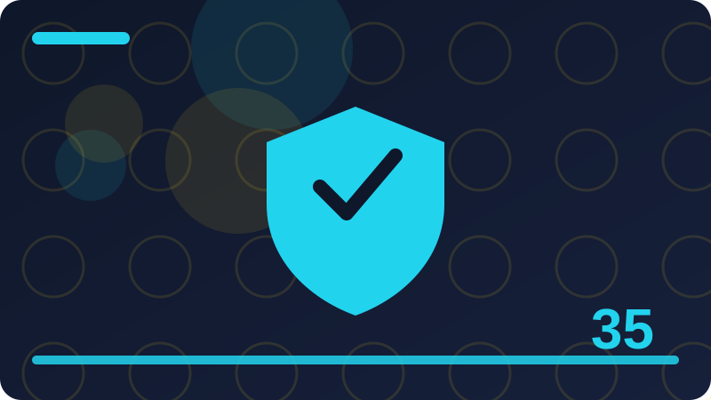

Chapter 35: Password Hashing and Safe Login Concepts

Section 1: Why Passwords Need Special Protection
Passwords need special protection because they are secrets that guard access, and because people reuse them, a password leaked from one program can endanger a person's accounts elsewhere. That reuse makes a password leak far more serious than the loss of a single account: it can cascade to email, banking, work, and personal accounts that share the same password. A program that stores passwords must therefore treat them as highly sensitive, even if the program itself seems unimportant, because the password's value extends beyond that program. The first rule of password protection is never to store a password in plain text, meaning readable as typed, because anyone who gains access to the storage, whether through a breach, a backup, a shared file, or a discarded device, can then read every password directly. The second rule is never to display, log, or transmit a password unnecessarily, because each copy is another chance for exposure. The third rule is to verify passwords without ever needing to recover the original, which is possible through hashing, the subject of this chapter. Hashing allows a program to check whether a typed password matches the stored one, without storing the typed password itself, so that even a complete copy of the storage does not reveal the passwords. Those three rules, no plain text, no unnecessary copies, and verification without recovery, are the foundation of safe password handling. They apply to any program that asks users for a password, however small, because the password's importance to the user does not depend on the program's size. A small program that leaks a reused password can cause large harm, which is why password protection is not optional, even for hobby projects.
struct LoginAttempt {
let username: String
let passwordWasProvided: Bool
}
func describeAttempt(_ attempt: LoginAttempt) -> String {
if attempt.passwordWasProvided {
return "Login attempted for \(attempt.username), password not shown"
}
return "Login attempted for \(attempt.username) without a password"
}
print(describeAttempt(LoginAttempt(username: "Ada", passwordWasProvided: true)))The login attempt example shows safe handling in miniature: it records that a password was provided, without recording the password itself. That boolean, provided or not, is enough for logging and for most diagnostics, while the password itself never appears in any record. A careless version that logged the password would create a permanent copy of a secret in a log file, which is a leak waiting to happen. When you design login handling, ask for each piece of data whether it needs to include the password, and if it does not, exclude it. Most login-related records, logs, error messages, and audit entries, do not need the password, only the fact that an attempt occurred, whether it succeeded, and for which user. That exclusion habit, applied consistently, prevents the most common password leak, which is not a sophisticated breach, but a password written into a log or a file by well-meaning code that did not need it there. Password protection starts with minimising where passwords appear, and it continues with hashing, which ensures that even the stored verification data does not reveal the password.
Check: Why is a password leaked from a small program potentially more harmful than the program itself?
Section 2: Hashing in Plain Words
Hashing is a one-way transformation that turns an input, such as a password, into a fixed-length string of characters, called a hash, from which the original input cannot feasibly be recovered. One-way means the transformation works in one direction only: it is easy to compute the hash from the password, but it is not feasible to compute the password from the hash, even with the hash and knowledge of the method. That property is what makes hashing suitable for password verification: a program stores the hash, not the password, and when a user types a password to log in, the program hashes the typed password and compares the result with the stored hash. If they match, the typed password was correct, even though the program never stored it and cannot recover it. Hashing also has the property that a small change in the input produces a completely different hash, so two similar passwords have unrelated hashes, and the hash does not reveal anything about the password's length or contents. Another important property is determinism: the same input always produces the same hash with the same method, which is what makes comparison possible. Without determinism, a correct password would produce a different hash each time and could never be verified. Hashing is not encryption, and the distinction matters: encryption is reversible with a key, meaning encrypted data can be decrypted back to the original, while hashing is not reversible, meaning a hash cannot be turned back into a password. That irreversibility is a strength for passwords, because it means that even the program's owner, with full access to stored hashes, cannot recover users' passwords. Understanding hashing as a one-way, deterministic fingerprint of a password is the foundation for everything else in this chapter, including salts, slow hashing, and safe verification.
import CryptoKit
func hashText(_ text: String) -> String {
let data = Data(text.utf8)
let digest = SHA256.hash(data: data)
return digest.map { String(format: "%02x", $0) }.joined()
}
print(hashText("hello"))
print(hashText("hello"))
print(hashText("hellp"))The hashing example uses SHA-256, a well-known hash function, to hash a short text. Hashing the same text twice gives the same result, demonstrating determinism, while hashing a text that differs by one letter gives a completely different result, demonstrating the avalanche effect, where small input changes produce large output changes. Those two properties together make hashing useful for verification: a correct input reproduces the stored hash exactly, while an incorrect input, even one close to correct, produces a different hash. Note that this example is for illustrating hashing concepts, not for password storage on its own, because password hashing requires additional measures, salts and slow hashing, which are covered in later sections. Using a fast, general hash alone for passwords is insufficient, for reasons that will be explained, but the basic idea, store a hash and compare hashes, is the starting point. When you think about hashing, remember the fingerprint analogy: a fingerprint identifies a person without being the person, and a hash identifies a password without being the password. That analogy captures both the usefulness and the limitation of hashing, and it will guide the more detailed topics that follow.
Check: How does hashing let a program verify a password without storing the password itself?
Section 3: Why Plain Hashing Is Not Enough for Passwords
Storing a plain hash of a password, without additional protection, is better than storing the password itself, but it is not sufficient, because plain hashes have weaknesses that attackers can exploit. The first weakness is that identical passwords produce identical hashes, so if two users choose the same password, their stored hashes will be the same, revealing that they share a password, and if one password is discovered, all accounts with the same hash are known to share it. The second weakness is that common passwords have known hashes: because hashing is deterministic, the hash of a common password, such as a dictionary word or a simple sequence, is the same everywhere, and lists of those hashes, called rainbow tables, allow an attacker who obtains stored hashes to look up common passwords quickly, without trying each one. The third weakness is speed: general hash functions are designed to be fast, which is good for many purposes, but for passwords, speed helps an attacker, because it allows them to try many guesses quickly, testing each guess by hashing it and comparing it with a stolen hash. Those three weaknesses, identical hashes for identical passwords, precomputed tables for common passwords, and fast guessing, together mean that plain hashing, while better than plain text, does not adequately protect passwords, especially weak or common ones. The defences against these weaknesses are salts, which make each hash unique, and slow hashing, which makes guessing expensive, both covered in the following sections. Understanding why plain hashing is insufficient is important, because it explains why password storage requires specialised methods, rather than just any hash function. A programmer who stores plain hashes, thinking they have protected passwords, has made a common and serious mistake, because the protection is far weaker than it appears. The rest of this chapter explains the additional measures that turn hashing from a weak protection into a strong one.
import CryptoKit
func plainHash(_ text: String) -> String {
let digest = SHA256.hash(data: Data(text.utf8))
return digest.map { String(format: "%02x", $0) }.joined()
}
let hashOne = plainHash("sunshine")
let hashTwo = plainHash("sunshine")
print(hashOne == hashTwo)The example shows that hashing the same password twice gives the same hash, which is the identical-hash weakness in action. If two users both chose sunshine, their stored hashes would match, revealing the shared password, and a precomputed table containing sunshine's hash would reveal it instantly to anyone who obtained the hashes. That demonstration is not an attack instruction; it is a defensive illustration of why plain hashing fails, intended to convince you that additional measures are necessary. The lesson is to never store plain hashes for passwords, and to use a password-specific hashing method that includes a salt and a deliberate slowness, as described next. When you review code that handles passwords, check specifically for plain hashing, because it is a red flag that the storage is weaker than intended, even though it looks protected at first glance. Recognising that red flag, and knowing the correct alternative, is a key outcome of this chapter.
Check: What three weaknesses make plain hashing insufficient for password storage?
Section 4: Salts: Making Every Hash Unique
A salt is a random value that is added to a password before hashing, so that even identical passwords produce different hashes, because their salts differ. The salt is stored alongside the hash, in plain text, which may seem surprising, but it is safe, because the salt's purpose is not secrecy; it is uniqueness. Knowing the salt does not reveal the password, because the attacker must still guess the password and combine it with the salt to test each guess. What the salt prevents is the reuse of precomputed tables and the recognition of identical passwords: with a unique salt per user, the hash of a common password is different for every user, so a precomputed table for unsalted hashes is useless, and two users with the same password have different stored hashes, so their sharing is not revealed. Salts should be generated with a secure random generator, be long enough to be unique in practice, such as sixteen bytes or more, and be different for every user and every password, not shared across users or reused when a password changes. When a user sets or changes a password, a new salt is generated, the password plus the new salt is hashed, and both the new salt and the new hash are stored. When a user logs in, the program retrieves the stored salt for that user, combines it with the typed password, hashes the combination, and compares the result with the stored hash. That process is straightforward, and it is built into password-specific hashing methods, so you rarely need to implement salting by hand. The key understanding is why salts work: they make each hash unique, which defeats precomputation and identical-password recognition, two of the three weaknesses of plain hashing. The third weakness, fast guessing, is addressed by slow hashing, covered next.
import Foundation
func makeSalt() -> String {
var bytes = [UInt8](repeating: 0, count: 16)
let result = SecRandomCopyBytes(kSecRandomDefault, bytes.count, &bytes)
if result == errSecSuccess {
return bytes.map { String(format: "%02x", $0) }.joined()
}
return ""
}
let saltOne = makeSalt()
let saltTwo = makeSalt()
print("Salts differ: \(saltOne != saltTwo)")
print("Salt length: \(saltOne.count)")The salt generation example creates two sixteen-byte salts using a secure random generator, and shows that they differ, which is the uniqueness property that makes salts effective. Each salt is stored in plain text alongside its hash, and its length, thirty-two hexadecimal characters for sixteen bytes, is sufficient to make accidental duplication extremely unlikely. In a real password system, you would not implement salting separately like this; you would use a password hashing library or platform method that handles salt generation, storage, and verification together, because hand-rolled salting is easy to get subtly wrong. But understanding the concept, a unique random value per password, stored openly, that makes each hash unique, is essential for understanding why password-specific methods are structured as they are. When you choose a password hashing method, check that it generates a unique salt per password automatically, because a method without salting, or with a shared salt, is missing a fundamental protection. Salting is not optional for password storage; it is a basic requirement, and any method that lacks it should not be used for passwords.
Check: Why is a salt stored in plain text, and why does that not weaken its protection?
Section 5: Slow Hashing and Why Speed Is the Enemy
Slow hashing means deliberately using a hash function that takes a noticeable amount of time and resources, such as a fraction of a second, rather than a general hash that takes microseconds, for password verification. That deliberate slowness is a defence, because it makes guessing expensive: an attacker who has stolen hashes and tries to guess passwords must pay the slow cost for each guess, which limits how many guesses they can try in a given time. For a legitimate user logging in, the slow cost is barely noticeable, because they log in once and wait a fraction of a second. For an attacker trying millions of guesses, the same fraction of a second per guess becomes hours, days, or years, which makes large-scale guessing infeasible. That asymmetry, negligible cost for one legitimate use versus prohibitive cost for many guesses, is the point of slow hashing. Password-specific hashing methods achieve slowness by iterating a hash many times, or by using a memory-hard design that requires significant memory as well as time, which also makes guessing harder to parallelise on specialised hardware. The exact slowness should be tuned to current hardware: too fast, and guessing remains feasible; too slow, and legitimate logins become annoying. A fraction of a second, such as a tenth to half a second, is a common target, balancing usability and security. Slow hashing methods also typically include salting automatically, combining both defences in one method. The key lesson is counterintuitive: for passwords, a slower function is a better function, because speed, which is a virtue in most computing, is a vulnerability when the function will be used by attackers to test guesses. Choosing a slow, password-specific hash, rather than a fast, general one, is therefore a fundamental password security decision, and it is one of the most important choices in this chapter.
func verifySlowly() -> String {
return "Verification takes a short, deliberate time for security"
}
print(verifySlowly())The example is a placeholder that states the principle, rather than implementing a slow hash, because implementing slow hashing by hand is not recommended; you should use a well-tested password hashing library or platform method that provides it. The principle it states is the lesson: verification should take a short, deliberate time, not because the program is inefficient, but because that time is a security cost imposed on guessers. When you choose a password hashing method, look for one described as slow, adaptive, or password-specific, with a configurable cost parameter that can be increased over time as hardware improves. That configurability is important, because a cost that is adequate today may become inadequate as computers get faster, and an adaptive method allows you to increase the cost without changing the method. Avoid fast general hashes for passwords, even with a salt, because they do not impose a sufficient guessing cost. Slow hashing, combined with salting, addresses all three weaknesses of plain hashing, and together they form the standard for password storage. That standard is the baseline you should expect from any password system you build or use.
Check: Why is a deliberately slow hash better for passwords than a fast one?
Section 6: Choosing a Password Hashing Method
Choosing a password hashing method means selecting a well-tested, password-specific method provided by a library or platform, rather than inventing your own or using a general hash. The methods commonly recommended by security guidance change over time as research advances, but they share the properties covered in this chapter: they salt automatically, they are deliberately slow, and they have a configurable cost that can be increased as hardware improves. Examples of such methods, as of current guidance, include bcrypt, scrypt, and Argon2, each with different trade-offs in time, memory, and configurability, and the right choice depends on your platform's support and current recommendations. What matters more than the specific name is the approach: use a method that is designed for passwords, that is widely reviewed, that is maintained, and that your platform supports well, rather than a method designed for general hashing, or a custom combination you invented. Custom password cryptography is a well-known danger, because it is easy to make subtle mistakes that weaken protection in ways that are not obvious, and those mistakes are not caught by ordinary testing, because the code appears to work. Using a standard, reviewed method avoids that danger, because the method has been scrutinised by experts and tested by many users. When you adopt a method, follow its documentation for cost settings, salt handling, and verification, and do not modify its internals. Also plan for the future: choose a method whose cost can be increased, and design your storage so that hashes can be upgraded when a user next logs in, by re-hashing with a higher cost or a newer method, if guidance changes. That upgrade path ensures that your password storage can evolve without forcing all users to reset their passwords at once. Choosing a standard method, following its guidance, and planning for upgrades are the practical steps for password hashing method selection.
struct PasswordStorage {
let methodName: String
let cost: Int
let hash: String
let salt: String
}
func describeStorage(_ storage: PasswordStorage) -> String {
return "Stored with \(storage.methodName) at cost \(storage.cost), salt and hash kept separately from plain text"
}
let storage = PasswordStorage(methodName: "password-specific method", cost: 12, hash: "stored-hash", salt: "stored-salt")
print(describeStorage(storage))The storage example models the information kept for a password: the method name, its cost, the hash, and the salt, with no plain-text password anywhere. Recording the method and cost alongside the hash is important, because it allows future upgrades: when a user logs in, the program can check whether the stored method or cost is outdated, and if so, re-hash the verified password with current settings. That upgrade-on-login pattern is a standard practice that keeps password storage current without mass resets. When you design password storage, include method and cost information, even if your chosen library handles it internally in a combined string, because that information is what enables future upgrades. Also, never store the plain password, even temporarily in a way that persists, and never include it in logs or error messages. The storage model above, method plus cost plus salt plus hash, with no plain text, is the shape of safe password storage, whatever specific method you choose. Follow a standard method's guidance for its exact format, and you will have storage that is both secure today and upgradeable tomorrow.
Check: Why should you use a standard password hashing method rather than inventing your own?
Section 7: Verifying a Password Safely
Verifying a password means checking whether a typed password matches the stored verification data, without ever recovering the original password, and doing so in a way that does not leak information through timing or messages. The process is: retrieve the stored salt and hash for the claimed username, combine the typed password with the stored salt using the same password hashing method, and compare the resulting hash with the stored hash using a comparison that takes the same amount of time regardless of how much matches, called a constant-time comparison. Constant-time comparison matters because a comparison that stops at the first differing character leaks information about how many initial characters matched, through the time it takes, which an attacker who can measure timing could exploit to guess a password character by character. Most password libraries handle constant-time comparison automatically, but the concept is important to understand, because it shows that even the comparison step needs care. Another aspect of safe verification is handling unknown usernames: if a username does not exist, the program should still perform a dummy verification, taking a similar amount of time, and return the same generic failure message as for a wrong password, rather than revealing that the username does not exist. That uniformity prevents an attacker from enumerating valid usernames by observing different responses or timings for existing versus non-existing users. The failure message itself should be generic, such as username or password incorrect, without saying which one was wrong, for the same reason as in the previous chapter's discussion of error messages. Safe verification is therefore a combination of correct hashing, constant-time comparison, uniform handling of unknown users, and generic messages, all of which prevent information leaks during the login process itself.
func genericLoginMessage(success: Bool) -> String {
if success {
return "Welcome!"
}
return "Username or password incorrect."
}
print(genericLoginMessage(success: false))
print(genericLoginMessage(success: true))The generic login message does not distinguish between a wrong username and a wrong password, which is the safe behaviour for verification failures. A message that said username not found would reveal which usernames exist, allowing an attacker to build a list of valid accounts to target. A message that said wrong password would confirm that the username exists, which is also information that should not be leaked. The generic message reveals only that the combination was incorrect, which is what the user needs to know to retry, without giving an attacker useful information. Combined with a dummy verification for unknown users, so that timing does not reveal existence either, generic messages make login verification information-tight. When you implement login, use generic messages for all failures, perform dummy work for unknown users, and rely on your password library's constant-time comparison. Those three practices together ensure that the verification process itself does not leak the very information it is meant to protect, which is a subtle but important aspect of safe login design.
Check: Why should a login failure message not say whether the username or the password was wrong?
Section 8: Password Rules That Help Users
Password rules, meaning requirements for what passwords users must choose, should help users create passwords that are both secure and memorable, rather than imposing arbitrary complexity that frustrates users without improving security. Research and current guidance suggest that length is more important than complexity: a long password, or better, a passphrase made of several random words, is harder to guess than a short password with mixed characters, and it is easier to remember. Rules that require a mix of upper and lower case, numbers, and symbols, but allow short passwords, often lead users to choose predictable patterns, such as a word with a capital first letter and a number at the end, which are easy for attackers to guess because they follow common patterns. More helpful rules are: require a minimum length, such as twelve characters or more, allow all characters including spaces, so that passphrases are possible, do not require periodic changes unless there is a reason to believe a password has been compromised, because forced changes lead users to choose weaker, predictable variations, and check new passwords against lists of commonly used or previously breached passwords, rejecting those that are known to be weak, without revealing the list itself. That breached-password check is a defensive measure that prevents users from choosing passwords that are already known to attackers, which is a common cause of account compromise. Password rules should also be explained clearly to users, with guidance on choosing a memorable passphrase, such as three or four unrelated words, rather than merely listing requirements. Helpful rules balance security and usability, because a rule that users circumvent, by writing passwords down insecurely or by reusing them, is worse than a slightly less strict rule that users actually follow. Design password rules to encourage long, memorable, unique passwords, and to reject known-weak ones, and users will be both more secure and less frustrated.
func isPasswordLongEnough(_ password: String) -> Bool {
return password.count >= 12
}
func passwordGuidance(for password: String) -> String {
if isPasswordLongEnough(password) {
return "Good length. Use a unique passphrase you can remember."
}
return "Please choose a longer password or passphrase, at least 12 characters."
}
print(passwordGuidance(for: "correct horse battery"))
print(passwordGuidance(for: "abc123"))The password guidance example checks length and gives helpful advice, encouraging a unique passphrase rather than merely rejecting a short password without explanation. That guidance is the user-facing part of password rules: it tells users what to do, not just what not to do, which helps them succeed. A program that only says password invalid, without explaining why or how to fix it, frustrates users and leads to weak choices. When you implement password rules, check length, allow spaces and all characters, reject known-common passwords using a reputable list or service where available, and explain the requirements and the reasoning in plain language. Avoid rules that force frequent changes or arbitrary complexity without length, because those rules have been shown to weaken real-world security by encouraging predictable patterns. Helpful password rules are a form of user education, delivered at the moment of choosing, and they are part of safe login design, because the strongest hashing cannot protect a password that is trivially guessable.
Check: Why is password length more helpful than forced complexity with short passwords?
Section 9: Login Attempts, Lockouts and Recovery
Login attempt handling involves limiting guesses, temporarily locking accounts after repeated failures, and providing a safe recovery path for users who forget their passwords, all without creating new vulnerabilities. Rate limiting, covered earlier, applies here: after a small number of failed attempts, a program should introduce a delay, or temporarily lock the account, to slow guessing. Lockouts should be temporary and should not reveal whether an account exists, because a lockout message that differs for existing versus non-existing accounts leaks existence, just as login messages can. A safe lockout message is generic, and it should apply the same delay regardless of whether the account exists, to avoid leaking information through timing or messages. Recovery, meaning helping a user who has forgotten their password to regain access, is a sensitive process that must be designed carefully, because it is an alternative path into an account, and a weak recovery path undermines even strong password protection. Safe recovery typically involves sending a time-limited, single-use reset link or code to a previously verified contact, such as an email address, and requiring the user to choose a new password through that link, without revealing the old password or allowing the reset link to be reused. Recovery links should expire quickly, such as within an hour, and should be invalidated after use, so that a leaked link cannot be used later. Recovery should also not reveal whether an account exists: a message saying that a reset link has been sent, even if no account matches, prevents existence enumeration, while still helping legitimate users, who will receive the link if their account exists. Login attempt handling, lockouts, and recovery together form the login system's defences against guessing and against lockout abuse, and they must be designed as a system, not as isolated features, because a weakness in any one can undermine the others.
struct LoginPolicy {
let maxAttempts = 5
var failedAttempts = 0
var isLocked: Bool {
return failedAttempts >= maxAttempts
}
mutating func recordFailure() {
failedAttempts += 1
}
mutating func recordSuccess() {
failedAttempts = 0
}
}
var policy = LoginPolicy()
policy.recordFailure()
policy.recordFailure()
print("Locked: \(policy.isLocked)")The login policy example tracks failed attempts and locks after five, resetting on success, which is the basic lockout pattern. A real implementation would also add a time-based unlock, so that a locked account becomes usable again after a delay, and it would apply the same generic messages and delays for non-existing accounts, to avoid leaking existence. It would also log failed attempts, without passwords, for audit purposes, so that guessing patterns can be detected. When you implement login policies, test both the lockout and the recovery paths, including the edge cases of exactly reaching the limit, of a successful login resetting the count, and of a recovery request for a non-existing account returning a generic message. Those tests ensure that the policy works as intended and does not leak information. Login attempt handling is a balance: strict enough to slow guessing, lenient enough not to lock out legitimate users who mistype, and uniform enough not to reveal account existence. That balance, tested carefully, is the goal of safe login policy design.
Check: Why should a password recovery message be the same whether or not an account exists?
Section 10: Multi-Factor Authentication in Plain Words
Multi-factor authentication, often shortened to MFA, means requiring more than one kind of evidence to prove identity, rather than relying on a password alone. The factors are usually categorised as something you know, such as a password; something you have, such as a phone, a hardware key, or an authenticator app that generates time-limited codes; and something you are, such as a fingerprint or face recognition. Requiring two factors, such as a password plus a code from an authenticator app, means that an attacker who steals a password still cannot log in without the second factor, which is a large security improvement, because passwords are frequently leaked, guessed, or reused. MFA is not a replacement for good password practices; it is an additional layer, in line with defence in depth, that protects accounts even when a password is compromised. For users, MFA adds a step to login, which is a usability cost, but that cost is justified for sensitive accounts, and it can be reduced by remembering trusted devices, so that the second factor is required less often on a familiar device, while still being required on a new device. For developers, implementing MFA involves generating and verifying second-factor codes securely, handling recovery when a user loses their second factor, and ensuring that the second-factor process itself does not leak information or create bypasses. Recovery for lost second factors is particularly sensitive, because it must help legitimate users without allowing attackers to bypass MFA by claiming loss. That recovery usually involves alternative verified contacts or backup codes provided at setup, stored safely by the user. MFA is increasingly expected for sensitive programs, and understanding its concept, two independent factors, is essential, even if you do not implement it immediately. A password alone is a single point of failure; MFA removes that single point, which is why it is one of the most effective security improvements available.
struct LoginWithMFA {
var passwordCorrect = false
var secondFactorCorrect = false
var isAuthenticated: Bool {
return passwordCorrect && secondFactorCorrect
}
}
let attempt = LoginWithMFA(passwordCorrect: true, secondFactorCorrect: false)
print("Authenticated: \(attempt.isAuthenticated)")The MFA example shows the core logic: authentication requires both the password and the second factor to be correct, not just one. A correct password alone is insufficient, which is the point of MFA: stealing the password is not enough. That logic, simple as it is, captures the security improvement, because it removes the single point of failure that a password alone represents. In a real implementation, the second factor would be a time-limited code, a hardware key response, or a biometric check, verified securely, with its own protections against guessing and replay. The example also illustrates why recovery matters: if a user loses their second factor, they cannot authenticate, even with a correct password, so a safe recovery path must exist, designed with the same care as password recovery. When you consider MFA for a program, weigh its usability cost against the sensitivity of the accounts it protects, and for sensitive accounts, the cost is usually justified. MFA is a layer, not a replacement, and it works best alongside the password practices covered in this chapter, together forming a login system that is resilient to password compromise.
Check: How does requiring a second factor protect an account even if its password is stolen?
Section 11: Storing Passwords: What Never to Do
There are several things that must never be done with passwords, and listing them explicitly helps you recognise them in code, whether your own or someone else's. Never store a password in plain text, in a file, a database, a log, or source code, because plain-text storage means anyone who accesses the storage learns every password immediately. Never store a password encrypted with a reversible method and a key kept alongside it, because that is effectively plain text to anyone who obtains both, and it defeats the purpose of hashing, which is to make recovery infeasible. Never store a plain hash without a salt and slowness, because, as shown earlier, plain hashes are vulnerable to identical-password recognition, precomputed tables, and fast guessing. Never log a password, display it on screen in full, or include it in an error message, crash report, or email, because each of those creates a copy outside the protected storage. Never send a password over an insecure connection, because it can be observed in transit. Never use a password as an encryption key directly, without a proper key derivation method, because passwords are typically low-entropy, meaning they contain less randomness than a proper key, and using them directly weakens the encryption. Each of these prohibitions has a safe alternative, covered in this chapter or the previous one: hash with a salt and a slow method, obtain secrets from secure storage, log only that an attempt occurred, use secure connections, and derive keys with a proper method where encryption is needed. When you review code that handles passwords, check specifically for these never-do items, because they are the most common and most serious password mistakes, and they are often present in code that otherwise looks reasonable. A code review checklist for passwords, containing these prohibitions, is a simple and effective tool for catching them before they reach users.
func neverLogPassword(username: String, passwordProvided: Bool) -> String {
if passwordProvided {
return "Login attempt for \(username), password withheld from log"
}
return "Login attempt for \(username) without password"
}
print(neverLogPassword(username: "Ada", passwordProvided: true))The example shows the safe alternative to logging a password: it records the username and the fact that a password was provided, without the password itself. That record is sufficient for auditing and debugging, while revealing nothing sensitive. A version that logged the password would violate the never-log rule, and it would create a persistent copy of a secret in a log file, which is a serious leak. When you write login code, search it for any place where the password variable is printed, logged, or stored, and remove each one, keeping only the hashing and verification steps that genuinely need the password, and only for the brief moment of verification. That search, done for every login feature, catches the most common password leak, which is not a breach, but a well-meaning log statement. Never-do lists are powerful because they are easy to check: a reviewer can search for password variables in logs and storage code and verify that none of the prohibited uses occur. Make that search part of your review for any code that touches passwords.
Check: List four things that must never be done with a password, and give the safe alternative for one of them.
Section 12: Password Hashing Libraries and Platform Support
Password hashing should be done with a library or platform feature designed for the purpose, rather than with hand-written code, because those libraries handle the details, salts, slowness, constant-time comparison, and format, correctly and consistently. In Swift, the available options depend on the platform and on the libraries you include, and they change over time, so the practical advice is to use the platform's recommended password hashing support where it exists, or a widely used, well-maintained password hashing library, following its documentation exactly. When evaluating a library, check that it is designed for passwords, not for general hashing; that it generates a unique salt automatically; that it is deliberately slow with a configurable cost; that it handles verification, including constant-time comparison, internally; and that it stores its parameters, such as method and cost, alongside the hash, to allow future upgrades. Also check that the library is maintained, with recent updates and a responsive maintainer, because an unmaintained security library may contain vulnerabilities that will not be fixed. Avoid libraries that are obscure, unmaintained, or that promise unusual features, because security libraries earn trust through scrutiny and use, not through novelty. When you adopt a library, do not modify its internals, and do not combine it with additional hand-written steps, such as an extra hash before or after, unless the library's documentation specifically recommends it, because extra steps can weaken rather than strengthen the protection, by introducing subtle errors. Follow the library's examples for storing and verifying, test those examples with both correct and incorrect passwords, and treat the library as a trusted component whose internals you do not need to understand fully, but whose properties, salting, slowness, and verification, you should verify from its documentation. That approach, trusted library plus documented use plus tests, is the professional way to handle password hashing.
struct HashedPassword {
let algorithm: String
let cost: Int
let salt: String
let hash: String
}
func verifyFormat(_ stored: HashedPassword) -> Bool {
return !stored.algorithm.isEmpty && !stored.salt.isEmpty && !stored.hash.isEmpty
}
let stored = HashedPassword(algorithm: "password-method", cost: 12, salt: "random-salt", hash: "computed-hash")
print(verifyFormat(stored))The hashed password struct models what a good library stores: the algorithm, the cost, the salt, and the hash, all together, with no plain-text password. The verification function checks that those fields are present, which is a basic sanity check for stored data. In practice, a library often encodes all of those fields into a single string, so that storage is a single value, but the information is the same. When you choose a library, check that its stored format includes algorithm and cost information, because that information is what allows upgrades and what proves that the hash was produced by a password-specific method, not by a general hash. A stored value that is just a hash, with no method or salt information, is a warning sign that the method may be inadequate. Also check that the library's verification function handles the stored format correctly, including legacy formats if you are migrating, so that existing users can still log in after an upgrade. Library selection is a trust decision, and it should be made deliberately, with the criteria in this section, rather than by picking the first result or the simplest example. A well-chosen library is a foundation for safe password handling, and a poorly chosen one undermines it, however careful the rest of the code is.
Check: What five properties should you check when choosing a password hashing library?
Section 13: Migrating from Weak to Strong Hashing
Many programs already store passwords with a weak method, such as plain text or plain hashes, and migrating them to a strong method is an important, delicate task, because it must be done without forcing all users to reset their passwords at once, if that can be avoided, and without ever exposing the weak stored values. The standard migration approach is gradual upgrade on login: when a user logs in successfully, the program verifies their password against the old stored value, using the old method, and if it matches, it immediately re-hashes the password with the new, strong method and stores the new hash, replacing the old one. Over time, as users log in, more and more accounts migrate to the strong method, until eventually all active accounts are migrated. Accounts that never log in remain on the old method, which is a residual risk, and after a reasonable period, those accounts can be required to reset their passwords on next login, or can be handled through a forced reset process, depending on the program's policy. During migration, the program must support both methods, distinguishing them by a method identifier stored alongside each hash, so that it knows which verification method to use for each account. That dual support is temporary complexity, but it is necessary for a smooth migration, and it should be removed once migration is complete, to avoid maintaining weak verification code indefinitely. Migration should also be combined with a security review: if weak hashes may have been exposed, users should be notified and asked to change their passwords, because migration alone does not undo a past exposure. The migration process itself must be tested carefully, with accounts on both old and new methods, to ensure that logins work correctly throughout, and that no account is locked out by the change. A well-planned migration turns a weak password store into a strong one gradually and safely, without disrupting users unnecessarily, which is the professional way to fix a past mistake.
enum HashMethod {
case old
case strong
}
struct AccountRecord {
let username: String
let method: HashMethod
}
func needsMigration(_ account: AccountRecord) -> Bool {
return account.method == .old
}
let oldAccount = AccountRecord(username: "Ada", method: .old)
let newAccount = AccountRecord(username: "Ben", method: .strong)
print(needsMigration(oldAccount))
print(needsMigration(newAccount))The migration example models accounts by their hashing method, with a simple check for whether migration is needed. In a real migration, the login flow would use that check after a successful verification with the old method, to decide whether to re-hash with the strong method and update the stored record. That re-hash on login is the core of gradual migration: it uses the moment when the password is known, during a successful login, to upgrade its storage, without ever needing the password at any other time. The method identifier stored with each account is what makes dual support possible, because the program can choose the verification method based on the identifier, rather than guessing. When you plan a migration, design the storage to include that identifier from the start, test the dual-method login flow thoroughly, and set a timeline for completing the migration, including handling for accounts that never log in. That plan, executed carefully, converts a weak store into a strong one with minimal disruption, which is a valuable skill, because many real programs need migration at some point, as guidance and methods evolve.
Check: How does upgrade-on-login migrate passwords from a weak method to a strong one without mass resets?
Section 14: Passwords and Single Sign-On Concepts
Single sign-on, often shortened to SSO, means that a user signs in once and gains access to several programs or services, without needing to sign in separately to each one, and without needing a separate password for each. SSO is convenient, because users remember one credential instead of many, and it can be more secure, because that one credential can be protected more strongly, with MFA and strong policies, than many separate passwords, which users tend to reuse or weaken. SSO works through a trusted identity provider, which verifies the user's identity and then tells each program, through a secure token, that the user is authenticated, without sharing the user's password with those programs. That separation is a security benefit: individual programs never see the password, so a breach in one program does not expose passwords for others. SSO also centralises account management: disabling an account at the identity provider disables it everywhere, which is faster and more reliable than disabling it in each program separately. For small programs, full SSO may be more infrastructure than is warranted, but the concept is worth understanding, because it explains why many organisations use it, and because it illustrates a principle: centralising authentication, with strong protection, can be safer than distributing weak passwords across many programs. SSO has its own risks: if the identity provider is compromised, or if a user's single credential is stolen, many programs are affected at once, which is why SSO is usually combined with MFA and with careful monitoring. That concentration of risk is the trade-off for its convenience and centralised control. When you design login for a program that will be part of a larger system, consider whether SSO fits, and if so, use a standard, well-tested SSO protocol and library, rather than inventing your own, because identity protocols are complex and easy to get wrong. For standalone small programs, a well-implemented local login, with strong hashing and sensible policies, remains appropriate, and SSO is a concept to know for future, larger systems.
struct SSOState {
var signedInToProvider = false
var programsAccessed: [String] = []
var canAccessProgram: Bool {
return signedInToProvider
}
}
var sso = SSOState(signedInToProvider: true)
print(sso.canAccessProgram)The SSO state example shows the core idea: once signed in to the provider, access to programs is granted based on that sign-in, without a separate password per program. That central sign-in is what makes SSO convenient and, when protected with MFA, secure. The example is simplified, omitting tokens, verification, and expiry, which are essential in a real implementation, but it captures the concept: one authentication, many programs. When you encounter SSO in real systems, look for the identity provider, the tokens it issues, and how programs verify those tokens, because those are the components that make SSO work securely. A program that accepts a token without verifying it properly is vulnerable, just as a program that accepts a password without hashing it properly is vulnerable. SSO does not remove the need for careful authentication; it moves authentication to a central, specialised component, where it can be done well, and where its protections, such as MFA and monitoring, benefit all programs that use it. That centralisation, with strong protection, is SSO's value, and its risk, in one idea.
Check: How does single sign-on improve security compared with many separate passwords, and what new risk does it introduce?
Section 15: Biometrics and Password Alternatives
Biometrics, such as fingerprints, face recognition, or voice patterns, and other password alternatives, such as hardware keys and passkeys, offer ways to authenticate without relying solely on a memorised password, and they have both benefits and limitations worth understanding. Biometrics are convenient, because users do not need to remember anything, and they are difficult for another person to present, because they are tied to the user's body. However, biometrics cannot be changed if compromised, unlike a password, which can be reset, so a leaked biometric template is a permanent problem, which is why biometric systems should store templates securely, on the device where possible, rather than in a central database. Biometrics also have error rates: they sometimes reject a legitimate user, or, rarely, accept someone else, and those errors must be handled gracefully, with a fallback authentication method. Hardware keys and passkeys, which are cryptographic credentials stored on a device or a key, offer strong security without memorisation, because they use public-key cryptography, where the private key never leaves the device and the program verifies a signature rather than a shared secret. That design means there is no password to leak from the program's storage, which removes a whole class of password problems. Passkeys are increasingly supported by platforms, and they represent a promising direction for authentication that is both more secure and more usable than passwords. For the programs in this book, passwords remain the primary topic, because they are the most common method and the one you are most likely to implement, but understanding alternatives helps you make informed choices as platforms evolve. When you consider an alternative, evaluate it on the same criteria as passwords: how is the credential stored, can it be revoked or changed if compromised, what happens when a user loses it, and how usable is it for your users? Those questions apply to every authentication method, and they are the framework for comparing them fairly.
struct AuthMethod {
let name: String
let requiresMemorisation: Bool
let canBeRevoked: Bool
}
let password = AuthMethod(name: "Password", requiresMemorisation: true, canBeRevoked: true)
let fingerprint = AuthMethod(name: "Fingerprint", requiresMemorisation: false, canBeRevoked: false)
print(password.name)
print(fingerprint.name)The authentication method comparison shows, in miniature, how to evaluate alternatives: passwords require memorisation but can be revoked, while fingerprints require no memorisation but cannot be revoked if compromised. That trade-off, convenience versus revocability, is central to choosing an authentication method. A method that is convenient but irrevocable needs extra protection for its stored templates, while a method that is revocable but hard to remember needs usability support, such as password managers or passphrases. When you design authentication, consider the full lifecycle of the credential, creation, use, loss, compromise, and revocation, not just the login moment, because the lifecycle determines the method's real security and usability. Passkeys and hardware keys score well on that lifecycle, because they are convenient, revocable, and do not involve a shared secret, which is why they are gaining adoption. Passwords remain common, and this chapter's practices remain essential for them, but the future of authentication is likely to involve fewer memorised secrets and more device-based credentials, and understanding that direction will help you design logins that remain secure as platforms change.
Check: What is the main advantage and the main drawback of biometric authentication compared with passwords?
Section 16: Password Managers and User Behaviour
Password managers are tools that generate, store, and fill in passwords for users, so that users can have a unique, long, random password for every account without needing to memorise them all, remembering only one master password for the manager itself. They are a significant security improvement, because they solve the core user problem that leads to weak passwords: the impossibility of memorising many strong, unique passwords. A user with a password manager can use a different random password for every program, so that a leak from one program does not endanger others, which addresses the reuse problem that makes password leaks so harmful. Programs can support password manager users by following standard practices, such as using clear, standard field names for username and password inputs, so that managers can recognise and fill them, and by not blocking pasting into password fields, because blocking paste forces users to type long passwords manually, which discourages manager use and leads to weaker, typed passwords. Blocking paste is a common but misguided security measure: it appears to prevent pasting from insecure sources, but in practice it harms legitimate manager users far more than it helps, because managers are a secure source. Programs should also allow long passwords, so that manager-generated random passwords are not rejected for being too long, and they should not impose arbitrary character restrictions that prevent manager-generated passwords from being used. Supporting password managers is therefore part of safe login design, not just a convenience: it enables users to follow the best practice of unique, random passwords for every account, which is the single most effective user behaviour for password security. When you design login forms, even simple ones, make them manager-friendly, with standard fields, paste allowed, and generous length limits, and you will help users be secure without extra effort on their part.
func allowsManagerPassword(_ password: String) -> Bool {
return password.count >= 12 && password.count <= 128
}
print(allowsManagerPassword("aB3$xY9!qW2#eR5&tU7"))
print(allowsManagerPassword("short"))The manager password check allows long passwords up to one hundred and twenty-eight characters, which accommodates manager-generated random passwords, while rejecting short ones. That generous upper limit is the manager-friendly choice: a program that limited passwords to, say, sixteen characters would reject many manager-generated passwords, forcing users to choose weaker, shorter ones. Similarly, a program that blocked pasting would force manager users to type a long random password by hand, which is error-prone and discouraging. When you set password rules, set the maximum generously, allow all characters, and allow pasting, so that manager users are supported, not hindered. Those choices cost nothing in security, because a long random password is stronger, not weaker, than a short typed one, and they gain a great deal, because they enable the behaviour, unique random passwords everywhere, that most improves real-world password security. Supporting managers is a small design decision with a large security payoff, and it is one that every login form should make.
Check: How do password managers improve security, and what should programs do to support them?
Section 17: Login Security for SwiftDay
SwiftDay, in its basic form as a local, single-user tool, does not need a full login system, because it runs on the user's own device, under their own account, and the device's own protections, such as its sign-in and file permissions, already guard its data. Adding a login to SwiftDay would add complexity and risk without clear benefit, unless SwiftDay gains sharing, syncing, or multiple users, in which case authentication becomes necessary. That judgement, login only when needed, is itself a security decision: unnecessary authentication creates unnecessary attack surface, in the form of password storage, recovery, and lockout logic, all of which must be implemented correctly to be safe. If SwiftDay were extended with syncing to a server, or with sharing tasks between users, then the login concepts of this chapter would apply fully: passwords hashed with a salt and a slow method, generic failure messages, rate limiting, safe recovery, and, where appropriate, MFA. The local version's security rests instead on file permissions, on not logging private contents, on safe defaults for any sharing features, and on atomic saves to prevent loss, as covered in the previous chapter. That local security model is proportionate to SwiftDay's current risks, and it is a good example of matching protection to threat model, rather than adding every possible protection regardless of need. When you extend SwiftDay, revisit its threat model first, asking what new data, users, or network features the extension introduces, and what new protections those require. That revisit, done before building the extension, ensures that security grows with the program, rather than lagging behind it. SwiftDay's lesson for login security is therefore about judgement: know when login is needed, implement it well when it is, and do not add it when the device and file protections already suffice. That judgement is part of secure design, and it applies to every program, not just SwiftDay.
struct SwiftDayAccess {
var isLocalSingleUser = true
var needsLogin: Bool {
return !isLocalSingleUser
}
}
let local = SwiftDayAccess(isLocalSingleUser: true)
print("Needs login: \(local.needsLogin)")The SwiftDay access example models the judgement in code: a local, single-user tool does not need login, while a shared or synced version would. That conditional, though simplified, captures the decision process: login is needed when there are multiple users, or when data leaves the device, and not otherwise. A program that adds login unnecessarily takes on password storage risks for no benefit, while a program that omits login when sharing is introduced leaves shared data unprotected. Getting that judgement right requires a threat model, as in the previous chapter, and a willingness to revisit it when the program changes. When you build or extend a program, ask whether login is needed, what it would protect, and what risks it would introduce, and let the answers guide you. That deliberation, documented briefly, is more valuable than a reflexive decision to add or omit login, because it ensures the choice is proportionate to the program's actual risks and users. SwiftDay, as a teaching project, is an ideal place to practise that deliberation, because its scope is small and its risks are clear.
Check: Why might adding a login system to a local, single-user SwiftDay do more harm than good?
Section 18: Common Login Vulnerabilities in Plain Words
Common login vulnerabilities are the recurring flaws that make login systems unsafe, described here in defensive terms so that you can recognise and avoid them. The first is storing passwords in plain text or with weak hashing, which exposes all passwords if storage is accessed. The second is revealing whether a username exists, through different messages or timings for existing versus non-existing accounts, which allows attackers to enumerate valid accounts. The third is lacking rate limiting, which allows unlimited guessing. The fourth is weak or predictable reset tokens, or reset links that do not expire, which allow attackers to take over accounts through the recovery path. The fifth is session handling flaws, such as sessions that never expire, or that are not invalidated on sign-out or on password change, which allow old sessions to remain usable after they should have ended. The sixth is logging passwords or tokens, which creates copies of secrets in less protected places. The seventh is using insecure connections for login, which exposes credentials in transit. Each of these vulnerabilities has a defence covered in this or the previous chapter: strong hashing with salt and slowness, generic messages and dummy verification, rate limiting and lockouts, time-limited single-use reset tokens, session expiry and invalidation, no secret logging, and secure connections. Recognising the list as a whole helps you review a login system systematically, checking each vulnerability in turn, rather than hoping you have thought of them all. When you build or review a login system, work through this list explicitly, verifying that each defence is present, because login vulnerabilities are rarely exotic; they are usually one of these common flaws, overlooked in the rush to make login work. A login system that avoids all seven is not guaranteed secure, but it has avoided the most frequent and most damaging login mistakes, which is a strong foundation.
struct LoginDefences {
var strongHashing = false
var genericMessages = false
var rateLimiting = false
var secureConnection = false
var allPresent: Bool {
return strongHashing && genericMessages && rateLimiting && secureConnection
}
}
var defences = LoginDefences(strongHashing: true, genericMessages: true, rateLimiting: true, secureConnection: true)
print(defences.allPresent)The login defences struct models the checklist approach to login vulnerabilities: all defences must be present for the system to be considered adequately protected, because a missing defence leaves a corresponding vulnerability open. A system with strong hashing but no rate limiting is still vulnerable to guessing, just as one with rate limiting but weak hashing is still vulnerable to stolen-hash attacks. That all-present requirement is why login review should be systematic, checking each defence, rather than focusing on one favourite protection. When you review a login system, list its defences, check each one, and fix any that are missing before considering the system ready. That systematic check, applied to the seven common vulnerabilities, catches the flaws that cause most login breaches, because those breaches usually exploit a missing defence, not a novel attack. Login security is largely about covering the known basics thoroughly, which is achievable with the practices in this chapter, applied consistently and checked systematically.
Check: Name four common login vulnerabilities, and state the defence for each.
Section 19: Testing Login Systems Safely
Testing login systems requires care, because tests involve credentials, and test credentials, if real or reused, can become a security risk themselves. The first rule is to use only test accounts with fake credentials, never real user passwords, in tests, and to ensure that test data is clearly fake and is not used in production. The second rule is to test both success and failure paths: correct passwords succeed, incorrect passwords fail with a generic message, unknown usernames fail identically to wrong passwords, rate limiting blocks after the limit, and locked accounts behave as designed. The third rule is to test that passwords are not logged, displayed, or stored in plain text, by checking logs and storage in tests, where feasible, for the absence of the test password. That negative check, asserting that a password does not appear where it should not, is a valuable security test, because it catches leaks that functional tests miss. The fourth rule is to test recovery paths, including expired links, reused links, and recovery for non-existing accounts, to ensure they behave safely and generically. The fifth rule is to test session handling, including expiry and sign-out invalidation, to ensure that old sessions cannot be reused. Testing login systems safely also means running tests in an isolated environment, not against production data or production accounts, because a test that accidentally locks a real account or sends a real reset email causes real harm. Isolated test environments, with fake accounts and fake email handling, allow thorough testing without risk to real users. Login tests are security tests, and they should be run regularly, as with other security tests, because login is a critical boundary, and a regression there, such as a change that accidentally reveals username existence, is a serious issue. Test login thoroughly, with fake data, in isolation, and treat login test failures as high priority.
import XCTest
func genericMessage(success: Bool) -> String {
if success {
return "Welcome!"
}
return "Username or password incorrect."
}
final class LoginMessageTests: XCTestCase {
func testFailureMessageIsGeneric() {
XCTAssertEqual(genericMessage(success: false), "Username or password incorrect.")
}
func testSuccessMessageDiffersFromFailure() {
XCTAssertNotEqual(genericMessage(success: true), genericMessage(success: false))
}
}The login message tests check that the failure message is generic, which is a security property, not just a functional one. A test like this guards against a future change that accidentally makes failure messages specific, such as revealing that a username does not exist, because that change would fail the test and alert developers. Security tests of this kind, checking messages, lockout behaviour, and the absence of passwords in logs, are as important as tests of successful login, because they guard the protections that make login safe. When you test a login system, write tests for its protections as well as for its successes, use fake credentials, run them in isolation, and treat their failures seriously. That testing discipline ensures that login security is verified, not just assumed, and that it remains verified as the system changes. Login is too important to leave untested, and its tests are too sensitive to run carelessly, so test thoroughly, with fake data, in a safe environment.
Check: Why must login tests use only fake credentials in an isolated environment?
Section 20: Safe Login Checklist
A safe login checklist brings together the practices of this chapter into a review you can apply to any login system, small or large. The checklist asks: are passwords hashed with a password-specific, slow, salted method from a trusted library, never in plain text or with a plain hash? Are failure messages generic, without distinguishing wrong usernames from wrong passwords, and is dummy verification performed for unknown users to prevent timing leaks? Is rate limiting in place, with temporary lockouts after a small number of failures, and are lockout messages generic? Are sessions given an expiry, invalidated on sign-out and on password change, and stored securely? Are reset links or codes time-limited, single-use, and sent only to previously verified contacts, with generic messages for non-existing accounts? Are passwords never logged, displayed, or sent over insecure connections, and are they handled only during verification, then discarded? Are password rules helpful, requiring length and rejecting known-common passwords, while supporting password managers with paste allowed and generous length limits? Are login protections tested, with fake credentials in isolation, covering success, failure, lockout, recovery, and session cases? Are dependencies and libraries for authentication maintained and updated? Working through that checklist, item by item, for a login system will reveal gaps that might otherwise be missed, because login security involves many small decisions, and a missed decision is a vulnerability. Keep the checklist with the login code, use it before releasing a login feature, and revisit it when the feature changes. That routine turns login security from a set of abstract principles into a concrete review, which is the most practical way to ensure that a login system is safe. A login system that passes this checklist is not perfect, but it has covered the essential protections, and that coverage is what users deserve from any program that asks for their passwords.
struct LoginChecklist {
var hashingIsStrong = false
var messagesAreGeneric = false
var rateLimitingIsPresent = false
var sessionsExpire = false
var isSafeToRelease: Bool {
return hashingIsStrong && messagesAreGeneric && rateLimitingIsPresent && sessionsExpire
}
}
var checklist = LoginChecklist(hashingIsStrong: true, messagesAreGeneric: true, rateLimitingIsPresent: true, sessionsExpire: true)
print(checklist.isSafeToRelease)The login checklist struct models the all-or-nothing nature of login security: all essential protections must be present for a system to be safe to release, because a missing protection leaves a corresponding vulnerability. A system with strong hashing but generic messages missing is still vulnerable to username enumeration, just as one with generic messages but no rate limiting is still vulnerable to guessing. That interdependence is why a checklist, rather than a single favourite protection, is the right review tool for login systems. Use the checklist in this section as a starting point, adapt it to your system's specific features, and work through it before every login release. That discipline, applied consistently, will make your login systems noticeably safer, because it ensures that no essential protection is forgotten in the rush to ship a feature. Login security is largely about thoroughness, and a checklist is the tool that enforces thoroughness.
Check: Why must all items on a login checklist be present, rather than just most of them?
Section 21: Password Storage Formats
Password storage formats matter, because they determine whether a stored password record contains everything needed for verification and future upgrades, and whether it can be misinterpreted. A good stored format includes the hashing method, its cost parameters, the salt, and the hash itself, either as separate fields or encoded into a single string with a defined structure, so that the verification code can parse it reliably. Including the method and cost is essential for upgrades, as discussed earlier, because it allows the program to recognise outdated records and re-hash on login. A format that stores only a hash, with no method or salt, is inadequate, because verification cannot know how the hash was produced, and migration cannot distinguish old from new records. Stored formats should also be versioned, in the sense that a new format can be introduced alongside the old one, with a marker that distinguishes them, so that a program can support both during a transition. That versioning is part of migration planning, and it should be designed in from the start, even if only one format exists initially, because future formats are inevitable as methods evolve. Another consideration is encoding: salts and hashes are binary data, and they should be stored in a safe textual encoding, such as hexadecimal or base64, rather than as raw bytes in a text file, where they could be corrupted by encoding issues. Finally, stored password records should be protected by the same file permissions and access controls as other sensitive data, because, although hashes are not passwords, they are still sensitive: an attacker with hashes can attempt guessing offline, at their own pace, without rate limiting, which is why hashes must be guarded almost as carefully as passwords themselves. A well-designed storage format, with method, cost, salt, and hash, in a safe encoding, under proper permissions, is the foundation of maintainable password storage.
struct StoredPasswordRecord {
let formatVersion: Int
let method: String
let cost: Int
let saltHex: String
let hashHex: String
}
func describeRecord(_ record: StoredPasswordRecord) -> String {
return "Version \(record.formatVersion), method \(record.method), cost \(record.cost)"
}
let record = StoredPasswordRecord(formatVersion: 1, method: "password-method", cost: 12, saltHex: "aabbcc", hashHex: "ddeeff")
print(describeRecord(record))The stored record example includes a format version, method, cost, salt, and hash, which is the complete information needed for verification and upgrades. A program reading this record knows exactly how to verify a password against it, and whether its method or cost is outdated and needs upgrading on next login. That completeness is the point of a good format: it is self-describing, so that verification and migration do not depend on external knowledge or assumptions. When you design password storage, define the format explicitly, document it, include version and method information, use a safe encoding for binary values, and protect the stored records with appropriate permissions. Those decisions, made deliberately at the start, prevent a host of later problems, from unverifiable records to unmigratable stores, and they make password storage maintainable over the long term, as methods and costs evolve. A format that is complete and documented is a form of future-proofing, and it is worth the small extra effort at design time.
Check: Why must a stored password record include its method and cost, not just the hash?
Section 22: Timing Attacks in Plain Words
A timing attack is a method of learning secret information by measuring how long an operation takes, rather than by observing its output directly. In password verification, a naive string comparison that stops at the first differing character takes longer when more initial characters match, so an attacker who can measure verification time precisely, over many attempts, could infer how many characters of a guessed value match the true value, and use that information to guess the value character by character. That attack is subtle and requires precise timing measurement, which is difficult over a network, but it is a real concern for high-security systems, and it is why constant-time comparison, which takes the same time regardless of how much matches, is used for sensitive comparisons. Timing attacks can also apply to other login behaviours: a program that takes measurably longer to respond for existing usernames than for non-existing ones leaks existence through timing, even if its messages are generic, which is why dummy verification for unknown users is important, to make timings uniform. Similarly, a program that performs extra work for one case, such as a more expensive hash for a particular user, could leak information through timing, though that is a more advanced concern. The general defence against timing attacks is uniformity: make sensitive operations take the same time and perform the same work regardless of the secret values involved, so that timing reveals nothing. That uniformity is achieved by using constant-time comparison functions provided by libraries, by performing dummy work for unknown users, and by avoiding branches that depend on secret values in timing-sensitive code. Timing attacks are an advanced topic, and for most small programs, using a trusted password library that handles constant-time comparison, plus generic messages and dummy verification, is sufficient protection. Understanding the concept, that time can leak information, is the key takeaway, because it explains why apparently equivalent implementations, one that stops early and one that always completes, differ in security, even though their outputs are the same.
func constantTimeEqual(_ first: String, _ second: String) -> Bool {
let firstBytes = Array(first.utf8)
let secondBytes = Array(second.utf8)
if firstBytes.count != secondBytes.count {
return false
}
var difference = 0
for index in firstBytes.indices {
difference |= Int(firstBytes[index]) ^ Int(secondBytes[index])
}
return difference == 0
}
print(constantTimeEqual("hello", "hello"))
print(constantTimeEqual("hello", "hallo"))The constant-time comparison function always examines every character, accumulating differences, rather than stopping at the first mismatch, so that its running time does not reveal how many characters matched. That uniformity is the defence against timing attacks on comparison. In practice, you should use a library's constant-time comparison rather than writing your own, because hand-written versions can be optimised by the compiler in ways that reintroduce timing differences, but the example illustrates the principle clearly: compare everything, accumulate the result, and return it only at the end. When you review code that compares secrets, such as hashes, tokens, or passwords, check that it uses a constant-time method, because an ordinary equality check, while functionally correct, leaks timing information that a careful attacker could exploit. That check, applied to secret comparisons, is a small but important part of safe verification, and it complements the other login protections covered in this chapter. Timing is a side channel, meaning information that leaks through a channel other than the intended output, and side channels require the same careful thinking as direct leaks.
Check: How can the time taken by a comparison leak information about a secret?
Section 23: Account Recovery Without Weakening Security
Account recovery, the process by which a user who has forgotten their password regains access, is one of the most sensitive parts of a login system, because it is an alternative path into an account that bypasses the normal password check. A weak recovery path undermines even strong password protection, because an attacker who can use recovery does not need the password at all. Safe recovery design involves several principles. First, recovery should be initiated only through a previously verified contact, such as an email address or phone number that the user verified when they created the account, so that recovery goes to the legitimate owner, not to whoever requests it. Second, the recovery credential, such as a link or code, should be time-limited, single-use, and randomly generated with a secure generator, so that a leaked or old credential cannot be reused. Third, recovery should not reveal whether an account exists, as discussed earlier, using generic messages for all requests. Fourth, recovery should require the user to choose a new password, meeting the program's password rules, rather than revealing the old password, which the program should not be able to recover anyway, because it stores only hashes. Fifth, after a successful recovery, the program should invalidate other sessions and, where appropriate, notify the user through their verified contact that their password was changed, so that a legitimate user can detect and report unauthorised recovery. Sixth, recovery attempts should be rate-limited and logged, like login attempts, to detect abuse. Recovery is a balance between helping legitimate users who have forgotten their passwords, which is a common and frustrating experience, and preventing attackers from exploiting the recovery path, which is a common attack vector. Designing recovery with the principles above, verified contact, time-limited single-use credentials, generic messages, new password choice, session invalidation, notification, and rate limiting, makes it both helpful and safe. Test recovery thoroughly, including expired, reused, and forged credentials, because recovery bugs are security bugs with direct account-takeover consequences.
struct RecoveryToken {
let value: String
var isUsed = false
let expiresInMinutes = 60
var isValid: Bool {
return !isUsed && expiresInMinutes > 0
}
}
let token = RecoveryToken(value: "random-token", isUsed: false)
print(token.isValid)The recovery token example models the essential properties of a safe token: a random value, a used flag that prevents reuse, and an expiry, here represented as a validity check. A real token would also be tied to a specific account, stored securely as a hash rather than in plain text where possible, and invalidated after use or expiry. The example's simplicity highlights the properties that matter: single-use, time-limited, and random. When you implement recovery, ensure that tokens have all three properties, that they are sent only to verified contacts, and that their use is logged and rate-limited. Also ensure that a successful recovery invalidates other sessions, so that an attacker who had an old session cannot continue using it after the legitimate user recovers the account. Recovery design is often neglected, because it is seen as a secondary feature, but it is a primary security boundary, and it deserves the same care as login itself. A login system is only as secure as its recovery path, because attackers will use the weakest path available, and recovery is frequently that path when it is designed carelessly.
Check: Why is account recovery often the weakest part of a login system, and what makes it safe?
Section 24: Passwords for Children and Shared Devices
Passwords on shared devices, or for users who may be children or who share a device with family members, require special consideration, because the usual assumptions about private devices and private passwords may not hold. On a shared device, a password that is saved, remembered, or displayed can be seen or used by another person using the same device, so programs on shared devices should be careful about remembering logins, should require re-authentication for sensitive actions, and should provide a clear, easy sign-out that fully ends the session. For children, passwords should be age-appropriate: a long, complex password that a child cannot remember will be written down insecurely or shared with others, which defeats its purpose, while a simpler, memorable passphrase, combined with guardian oversight where appropriate, may be more secure in practice, because it will actually be kept private. Programs for children should also avoid collecting passwords unnecessarily, and should involve guardians in account creation and recovery, with clear explanations of what data is held and how it is protected. Shared device considerations also include not displaying passwords on screen, even briefly, in a way that others nearby could read, and not storing passwords in a way that another user of the device could access, such as in an unprotected file. File permissions and device user accounts help here, but program design should not assume they are sufficient. When you design login for shared or family contexts, think about who else might see the screen, use the device, or access the files, and design protections accordingly: easy sign-out, re-authentication for sensitive actions, no password display, and guardian involvement where appropriate. Those protections, tailored to the context, make login safer for users whose devices and accounts are not fully private, which is a common real-world situation that generic login design often overlooks.
struct SharedDeviceSession {
var isSignedIn = false
mutating func signOutFully() {
isSignedIn = false
}
func requiresReauthentication(for action: String) -> Bool {
return action == "deleteAll" || action == "shareAll"
}
}
var session = SharedDeviceSession(isSignedIn: true)
session.signOutFully()
print(session.isSignedIn)The shared device session example shows full sign-out and re-authentication for sensitive actions, which are the key protections for shared devices. Full sign-out ensures that the next person using the device cannot access the previous user's account, while re-authentication for destructive or sharing actions ensures that a brief moment of access, such as picking up an unlocked device, does not allow serious harm without the password. Those two measures, applied consistently, significantly improve security on shared devices, without making ordinary use much harder. When you design for shared contexts, also consider session timeouts that are shorter than for private devices, because a shared device is more likely to be left unattended while still signed in. Shorter timeouts, combined with easy sign-out and re-authentication for sensitive actions, form a proportionate response to shared-device risks. Context matters in login design, and shared devices are a context that deserves explicit consideration, rather than assuming every device is private to one user.
Check: What extra login protections are needed on a shared device compared with a private one?
Section 25: Passkeys in Plain Words
Passkeys are a modern authentication method that replaces passwords with cryptographic credentials stored on a user's device, such as a phone or a hardware key, and verified by the program without the program ever seeing a shared secret. In plain words, when a user creates a passkey for a program, their device generates a pair of keys: a private key that stays on the device and is never shared, and a public key that is sent to the program and stored there. When the user logs in, the program sends a challenge, a random value, to the device, the device signs the challenge with the private key, after the user confirms with a fingerprint, face, or device PIN, and the program verifies the signature using the stored public key. If the signature is valid, the user is authenticated, without any password having been sent or stored. That design has several benefits: there is no password to leak from the program's storage, because only public keys are stored, and public keys are not secrets; there is no password for users to reuse, forget, or have phished, because authentication is tied to the device and requires user confirmation; and passkeys are resistant to phishing, because the device checks that the challenge comes from the legitimate program's domain before signing, so a fake site cannot obtain a valid signature for the real program. Passkeys also improve usability, because users authenticate with a fingerprint or face, rather than typing a password, which is faster and less error-prone. The limitations include device dependence: if a user loses all their devices, recovery can be difficult, though passkeys are increasingly synced across a user's devices through their platform account, which mitigates this. Passkeys are supported by major platforms and browsers, and they are increasingly recommended as a replacement for passwords, especially for new programs. Understanding passkeys, even if you do not implement them immediately, is important, because they represent the direction authentication is heading, and because they illustrate a principle: authentication without shared secrets is stronger than authentication with them, because there is nothing to leak.
struct PasskeyAccount {
let username: String
let publicKeyStored: Bool
let privateKeyOnDevice: Bool
}
func canAuthenticate(_ account: PasskeyAccount) -> Bool {
return account.publicKeyStored && account.privateKeyOnDevice
}
let account = PasskeyAccount(username: "Ada", publicKeyStored: true, privateKeyOnDevice: true)
print(canAuthenticate(account))The passkey account example models the two parts of passkey authentication: a public key stored by the program, and a private key held on the device, both required for authentication. That separation, public stored and private never shared, is the core of passkey security. A breach of the program's storage reveals only public keys, which cannot be used to impersonate users, because impersonation requires the private key, which never leaves the device. That property, no shared secret to leak, is what makes passkeys fundamentally stronger than passwords, whose hashes, while protected, are still targets for guessing if stolen. When you consider authentication for a new program, investigate passkey support on your platform, because it may provide a better balance of security and usability than passwords, especially for users who struggle with password management. Passkeys are not a complete replacement for all the practices in this chapter, session handling, rate limiting, and recovery still matter, but they remove the password storage problem, which is one of the hardest parts of login security. That removal is a significant simplification, and it is why passkeys are gaining adoption.
Check: How does a passkey authenticate a user without the program ever storing a shared secret?
Section 26: Login Auditing and Monitoring
Login auditing means recording login-related events, such as successful logins, failed attempts, password changes, and recovery requests, with enough detail to detect misuse and to investigate incidents, but without recording sensitive values such as passwords or tokens. An audit record for a login event typically includes the username, the time, whether the attempt succeeded or failed, and, where appropriate and privacy-respecting, general information about the source, such as whether it was a new device, without collecting excessive personal data. Those records allow a program or its administrators to detect patterns, such as many failed attempts for one account, logins from unusual locations or devices, or a sudden increase in recovery requests, all of which may indicate an attack. Monitoring means reviewing those records regularly, either manually or with automated alerts, so that patterns are noticed promptly, rather than only after an incident is reported. For small programs, monitoring may be as simple as logging failed attempts and reviewing them occasionally, while for larger systems it may involve automated alerts for thresholds, such as more than a certain number of failures in an hour. Auditing must balance security and privacy: audit logs should contain enough to detect misuse, but not so much that they themselves become a privacy risk, such as recording full device details or locations without need. They should also be protected against tampering, because an attacker who can alter audit logs can hide their attempts. Login auditing is a detective control, meaning it does not prevent misuse by itself, but it enables detection and response, which is an essential part of security, because prevention alone is never perfect. When you implement login, add audit logging for its important events, review the logs periodically, and set up simple alerts for obvious abuse patterns, such as repeated failures. Those steps turn login from a silent gate into a monitored boundary, where misuse is visible and can be acted upon.
import Foundation
func auditLogin(username: String, success: Bool) {
let timestamp = Date()
let result = success ? "success" : "failure"
print("[LOGIN AUDIT] \(timestamp) user=\(username) result=\(result)")
}
auditLogin(username: "Ada", success: true)
auditLogin(username: "Ada", success: false)The login audit example records the username, time, and result for each attempt, without the password or any token, which is the safe audit format for logins. A reviewer reading these entries could see that Ada had a success followed by a failure, which is normal, while many consecutive failures would stand out as a possible guessing attempt. That visibility is the purpose of auditing: it makes patterns visible that would otherwise be invisible. When you implement login auditing, record successes and failures consistently, protect the audit log, and review it for patterns, even if only occasionally. For programs with many users, consider automated alerts for thresholds, such as a high failure rate for one account, because manual review does not scale. Auditing is not glamorous, but it is one of the few controls that helps after prevention has failed, by revealing misuse that would otherwise go unnoticed. A login system without auditing is a system where attacks happen silently, which is a dangerous blindness. Add auditing, review it, and act on what it reveals, and your login system will be both preventive and detective, which is a stronger combination than prevention alone.
Check: What login events should be audited, and why must audit records never include passwords?
Section 27: Secure Password Change Flows
Changing a password, whether by a user who knows their current password or by an administrator, is a sensitive operation that must be designed to prevent unauthorised changes. The standard flow for a user changing their own password is: require the user to be authenticated, require them to provide their current password, require them to choose a new password meeting the program's rules, verify the new password by having them type it twice or by showing it, and then store the new password's hash with a new salt, invalidating other sessions where appropriate. Requiring the current password prevents an attacker who gains brief access to a signed-in session, such as on an unlocked device, from changing the password and locking out the legitimate user, because they would need to know the current password as well. Invalidating other sessions after a change prevents an attacker with an old session from continuing to use it after the legitimate user has changed their password to lock them out. Notifying the user through a verified contact that their password was changed allows them to detect an unauthorised change promptly. For administrator-initiated changes, the administrator should be authorised, the change should be audited, and the user should be notified, because an admin changing a user's password is a powerful action that should not happen silently. Password change flows should also rate-limit attempts, to prevent guessing of the current password through the change form, and they should use generic messages for failures, to avoid leaking information. A password change is, in security terms, a re-authentication and a credential replacement in one operation, and it deserves the same care as login and recovery, because a flaw in the change flow can allow account takeover just as surely as a flaw in login. Test change flows thoroughly, including wrong current passwords, mismatched new passwords, and weak new passwords, to ensure they behave safely in each case.
struct PasswordChange {
var currentPasswordCorrect = false
var newPasswordMeetsRules = false
var canChange: Bool {
return currentPasswordCorrect && newPasswordMeetsRules
}
}
let change = PasswordChange(currentPasswordCorrect: true, newPasswordMeetsRules: true)
print(change.canChange)The password change example requires both the current password to be correct and the new password to meet the rules, which are the two essential checks for a safe change. A change that omitted the current password check would allow anyone with session access to take over the account, while a change that omitted the rules check would allow weak new passwords. Both checks together, plus session invalidation and notification after a successful change, form a safe change flow. When you implement password changes, include those checks, test the failure cases, and ensure that a successful change invalidates other sessions and notifies the user. Those steps protect the change operation from being used as an account-takeover path, which is its main risk. Password change is a routine feature that users expect, but its security implications are significant, and it should be designed and tested with the same care as login itself. A safe change flow respects the user, by allowing them to update their credential, while protecting them, by ensuring that only they can do so.
Check: Why must changing a password require the current password and invalidate other sessions?
Section 28: Passwords in Source Code and Examples
Passwords and other secrets must never appear in source code, examples, documentation, or test data that will be shared, because shared code is copied, published, and stored in places beyond the author's control, and a secret in shared code is a secret that has been disclosed. That rule applies even to example passwords used in tutorials or documentation: examples should use clearly fake passwords, such as example-password, that are obviously not real, and should never use a real password, even one that seems unimportant, because real passwords are often reused, and a password disclosed as an example may be a password the author uses elsewhere. Test data should also use fake passwords, and test accounts should be clearly marked as test accounts, with credentials that are not used in production and that would be useless if leaked. When a secret is accidentally committed to source code, the correct response is to rotate it immediately, meaning change it everywhere it was used, because removing it from the code does not remove it from history, where it remains accessible to anyone who saw the earlier version. That rotation, plus a review of where the secret may have been copied, is the incident response for a code leak, and it should be done promptly, without assuming the leak went unnoticed. Preventing code leaks involves several habits: using a secrets manager or environment variables for real secrets, so that code never contains them; reviewing code before sharing, specifically for secrets; using tools that scan for secrets in code, where available; and training contributors to recognise secrets and to use fake values in examples. Those habits, applied consistently, prevent the most embarrassing and damaging kind of leak, one that is published by the author themselves, in their own code, for anyone to find. Passwords in code are a self-inflicted breach, and they are entirely preventable with the habits in this section.
func examplePassword() -> String {
return "example-password-do-not-use"
}
print(examplePassword())The example password function returns a clearly fake value, labelled as not to be used, which is the safe practice for examples. A reader seeing that value knows immediately that it is illustrative, not a real credential, and they will not try to use it, nor will they learn anything sensitive from it. Contrast that with an example that used a real-looking password, which a reader might mistake for a real credential, or which might actually be one, leaked through the example. When you write examples, documentation, or tests that involve passwords, use fake values that are obviously fake, and state that they are fake, so that no reader is misled and no secret is disclosed. That habit, applied to every example, protects both the author and the readers, and it sets a good example for secure coding in general. Shared code is a publication, and publications should never contain secrets, however trivial they may seem, because trivial secrets are often reused, and reused secrets are valuable to attackers.
Check: What should you do immediately if a real password is accidentally committed to shared code?
Section 29: Login for Offline Programs
Offline programs, which run without a network connection and store data locally, have different login considerations from online programs, because there is no server to verify credentials against, and no central account management. For a purely offline, single-user program, login is often unnecessary, as discussed for SwiftDay, because the device's own user account already provides authentication, and adding a program-level password adds complexity without clear benefit, unless the program's data is especially sensitive and the device is shared. If an offline program does need a password, such as to protect sensitive local data on a shared device, the password should be handled with the same hashing practices as online programs: salted, slow hashing, stored locally with appropriate file permissions, and verified locally without ever storing the plain password. Offline verification has a limitation: because verification happens on the device, an attacker with access to the device and its storage can attempt guessing offline, without rate limiting, by copying the stored hash and trying guesses at their own pace. That offline guessing risk makes strong passwords and slow hashing even more important for offline programs, because the attacker is not constrained by network rate limits. It also means that offline password protection is only as strong as the device's physical security and the password's strength, and users should understand that limitation. For highly sensitive offline data, additional protection, such as encrypting the data with a key derived from the password using a proper key derivation method, provides stronger protection than a simple password check, because the data itself is unreadable without the password, not merely gated by it. That encryption approach is more complex, and it should use well-tested libraries, but it is the appropriate level for sensitive offline data. For most offline programs, the judgement is: if login is needed, implement it with strong hashing and clear limitations, and if the data is highly sensitive, consider encryption as well, using trusted libraries. Offline login is not simpler than online login; its risks are different, and they require the same careful thinking.
struct OfflineAccess {
var passwordHashStored = true
var requiresStrongPassword: Bool {
return passwordHashStored
}
}
let access = OfflineAccess()
print(access.requiresStrongPassword)The offline access example notes that stored password hashes require strong passwords, which is the key point for offline programs: because guessing can happen offline, without rate limiting, password strength and slow hashing matter even more. A weak password for an offline program is especially vulnerable, because an attacker who obtains the device or its storage can guess at full speed, unimpeded by network controls. When you design offline login, emphasise password strength to users, use a slow hash with a high cost, and explain the limitation that device access enables offline guessing, so that users understand the importance of a strong password and of device security. Those explanations, combined with strong hashing, make offline login as secure as it can be, given its inherent limitation. Offline programs should also avoid giving a false sense of security: a simple password gate, without encryption, does not protect data from someone who can read the files directly, because they can bypass the gate by reading the data files. If data must be protected from direct file access, encryption, not just a password gate, is required. That distinction, gate versus encryption, is essential for honest offline security design.
Check: Why is offline password guessing harder to limit than online guessing, and what does that imply?
Section 30: Password Hashing Checklist
A password hashing checklist summarises the essential practices for storing and verifying passwords, and it can be used to review any password implementation. The checklist asks: are passwords never stored in plain text, and never logged, displayed, or sent over insecure connections? Are they hashed with a password-specific, slow, salted method from a trusted library, with a unique salt per password and a configurable cost? Is verification done with constant-time comparison, generic failure messages, and dummy work for unknown users, to prevent timing and existence leaks? Is rate limiting in place, with temporary lockouts, and are lockout messages generic? Are sessions given expiry, invalidated on sign-out and on password change, and stored securely? Are recovery tokens time-limited, single-use, randomly generated, and sent only to verified contacts, with generic messages? Are password rules helpful, requiring length, rejecting known-common passwords, and supporting password managers? Are stored records complete, with method, cost, salt, and hash, and protected by appropriate permissions? Are password implementations tested, with fake credentials in isolation, covering success, failure, lockout, recovery, and migration cases? Are libraries and methods maintained and updated, with a plan for upgrading hashes on login when guidance changes? Working through that checklist for a password implementation will reveal gaps, because password security involves many details, and a missed detail is a vulnerability. Keep the checklist with the password code, use it before releasing a password feature, and revisit it when the feature changes or when guidance changes. That routine, applied consistently, ensures that password storage remains strong over time, even as methods evolve and as new threats emerge. Password hashing is a specialised area, but its essentials are checkable, and a checklist is the practical tool for checking them thoroughly, without needing to be a cryptography expert. Use it, and your password storage will be as secure as current best practice allows.
struct PasswordChecklist {
var noPlainText = false
var saltedSlowHash = false
var genericMessages = false
var rateLimiting = false
var passes: Bool {
return noPlainText && saltedSlowHash && genericMessages && rateLimiting
}
}
var checklist = PasswordChecklist(noPlainText: true, saltedSlowHash: true, genericMessages: true, rateLimiting: true)
print(checklist.passes)The password checklist struct models the all-or-nothing nature of password security: all essential practices must be present for the implementation to pass, because a missing practice leaves a corresponding vulnerability. A system with strong hashing but generic messages missing is still vulnerable to enumeration, just as one with generic messages but no rate limiting is still vulnerable to guessing. That interdependence is why a checklist, rather than a single protection, is the right review tool. When you review password code, work through the checklist item by item, verify each one with a test or an inspection, and fix any that fail before considering the implementation ready. That thoroughness, applied to password code, is what protects users' credentials, which are among the most sensitive data a program can hold. Password security is not about perfection; it is about covering the essentials thoroughly, and a checklist is how thoroughness is achieved in practice.
Check: Why is a checklist especially valuable for reviewing password implementations?
Section 31: Key Derivation in Plain Words
Key derivation means turning a password, or another low-entropy secret, into a cryptographic key that is suitable for encryption, using a method designed for that purpose. It is needed because passwords are typically short, human-memorable, and low in randomness, while encryption keys need to be long, random, and uniformly distributed to be secure. Using a password directly as a key would be weak, because its low randomness makes it guessable, and because its format may not match what the encryption method expects. A key derivation function addresses this by combining the password with a salt and applying a slow, iterated process, similar to password hashing, to produce a key of the required length and randomness. The salt ensures that the same password produces different keys for different purposes or users, and the slowness makes guessing the password from the key expensive, just as with password hashing. In fact, key derivation and password hashing share much of their design, because both transform a weak human secret into a strong cryptographic value, and both must resist guessing. The difference is in purpose: password hashing produces a verification value that is stored and compared, while key derivation produces a key that is used for encryption or decryption and is typically not stored, but recomputed from the password each time it is needed. That recomputation means the key exists only briefly, during use, which limits its exposure. Key derivation should use a standard, well-tested function designed for the purpose, with appropriate parameters for salt length, iteration count, and output length, rather than a hand-written combination of hashes. When you need to encrypt data with a password, use a proper key derivation function from a trusted library, with a unique salt per encryption, and store the salt alongside the encrypted data, so that the key can be recomputed when the password is provided again. That pattern, password plus salt plus derivation plus encryption, is the safe way to protect data with a password, and it is far stronger than using the password directly or storing an encryption key alongside the data it protects.
struct DerivedKeyInfo {
let saltLength = 16
let keyLength = 32
let purpose = "Encryption key derived from password, never stored"
}
let info = DerivedKeyInfo()
print(info.purpose)The derived key information example states the essential properties: a salt of sufficient length, a key of the required length, and the principle that the derived key is never stored, but recomputed when needed. That non-storage is important, because a stored key alongside encrypted data defeats the encryption, just as a stored password alongside its hash would defeat hashing if the password were the key. In a real implementation, the derivation function would take the password and salt and produce the key, which would then be used for encryption and discarded, while the salt and the encrypted data would be stored. When the user provides the password again, the same derivation reproduces the same key, allowing decryption, without the key ever having been stored. That design, recomputation rather than storage, is what makes password-based encryption secure, provided the password is strong and the derivation is slow. When you implement password-based encryption, follow a trusted library's guidance for derivation parameters, use a unique salt, and never store the derived key. Those practices, combined with strong passwords, give encrypted data meaningful protection, even if the storage is accessed by others.
Check: Why must a password be passed through key derivation before being used for encryption?
Section 32: Passwords and Encryption Keys Are Different
Passwords and encryption keys are different kinds of secrets, and confusing them leads to security mistakes, so distinguishing them clearly is important. A password is a human-memorable secret, typically short, low in randomness, and chosen by a user, which makes it guessable and reusable, and therefore suitable only as an authentication credential, verified through hashing, or as an input to key derivation, never as a direct encryption key. An encryption key is a long, random value, generated by a secure generator, with high randomness, designed to be used by a program, not memorised by a person, and it must be kept secret and managed carefully, because anyone with the key can decrypt the data it protects. Keys are typically stored in secure storage, such as a keychain or a hardware module, or derived from a password when needed, rather than written in code or in plain files. The confusion arises when a program uses a password where a key is needed, such as encrypting data directly with a password string, which is weak because the password's low randomness makes the encryption guessable, or when it stores a key where a password hash should be, such as storing an encryption key in a database alongside the data it encrypts, which defeats the encryption. The correct pattern is to keep the two separate: passwords authenticate users, through hashing and verification, and keys protect data, through encryption, with keys either generated randomly and stored securely, or derived from passwords through a proper derivation function when a user-supplied password must protect data. That separation, password for authentication and key for encryption, with derivation bridging them when needed, is the clean model for handling both kinds of secret. When you design a program that uses both, label each secret clearly, password or key, and handle each according to its kind, never substituting one for the other. That labelling discipline prevents the confusion that leads to weak encryption and exposed keys.
struct SecretKind {
let isPassword: Bool
let isKey: Bool
}
func describeSecret(_ secret: SecretKind) -> String {
if secret.isPassword {
return "Password: verify by hashing, never use directly as a key"
}
if secret.isKey {
return "Key: store securely, never derive from a weak password"
}
return "Unknown secret kind"
}
print(describeSecret(SecretKind(isPassword: true, isKey: false)))
print(describeSecret(SecretKind(isPassword: false, isKey: true)))The secret kind example distinguishes passwords from keys by their handling rules, which is the practical distinction to keep in mind. A password is verified by hashing, while a key is stored securely and used for encryption, and those different rules reflect their different natures. When you encounter a secret in code, ask which kind it is, and check that it is handled accordingly. A password handled as a key, or a key handled as a password, is a design error that weakens protection, even if the code appears to work. That error is common when a program grows and secrets are added without clear labelling, which is why explicit labelling, in names, types, or comments, is valuable. Name password variables as passwords and key variables as keys, and do not mix them, so that a reviewer can see at a glance whether each secret is handled correctly. That naming discipline, simple as it is, prevents a class of security mistakes that arise from confusion between two different kinds of secret. Passwords and keys are both secrets, but they are not interchangeable, and treating them distinctly is a basic security habit.
Check: Why is using a password directly as an encryption key insecure?
Section 33: Breach Notification in Plain Words
Breach notification means telling affected users when their data, including password information, may have been exposed, so that they can protect themselves, such as by changing their passwords, especially if they reused them elsewhere. Notification is a responsibility, not just a courtesy, because users cannot protect themselves against a breach they do not know about, and delaying notification while a breach is investigated, beyond the time needed to understand its scope, leaves users exposed longer than necessary. A good breach notification explains, in plain language, what happened, what data was involved, including whether password hashes were exposed and what method protected them, what the program's operator has done to contain and fix the problem, and what users should do, such as changing their password and checking other accounts where they reused it. It should be honest about uncertainty, stating what is known and what is still being investigated, rather than minimising or overstating the impact, because users' trust depends on honesty, and a notification that later proves inaccurate damages trust more than an initially cautious one. Notification should be sent through a trusted channel, such as the program's official communication or the user's verified contact, and it should not ask users to click links or provide passwords in response, because breach notifications are themselves targets for phishing, where attackers impersonate the notification to steal credentials. Instead, it should direct users to sign in through their usual method and change their password there, without following links in the message. Breach notification is a difficult message to write, because it admits a failure, but it is an essential part of responsible data handling, and it is required by law in many places for certain kinds of data. Preparing a notification template in advance, as part of incident response planning, makes the actual notification faster and clearer when it is needed, which is valuable, because speed matters in breach response. A program that notifies promptly, honestly, and helpfully will retain more user trust after a breach than one that hides or delays, even though the breach itself is a failure.
func breachMessage() -> String {
return "We discovered unauthorised access to stored password data. Please sign in through the usual app and change your password, and change it anywhere else you reused it."
}
print(breachMessage())The breach message example states what happened, in general terms, and what users should do, without asking them to click a link or provide a password, and without revealing unnecessary technical details. That structure, what happened, what to do, and how to do it safely, is the template for a responsible notification. A message that asked users to click a link to reset would be dangerous, because users cannot distinguish a legitimate reset link from a phishing link in a breach context, and a message that minimised the impact, such as saying no action is needed when password hashes were exposed, would leave users unprotected. When you prepare for breach notification, write a template following this structure, keep it ready, and review it as part of incident response planning. That preparation ensures that, under the pressure of a real incident, the notification is prompt, honest, and helpful, rather than delayed, vague, or misleading. Breach notification is the moment when a program's responsibility to its users is most visible, and handling it well matters greatly for trust, even though it follows a failure.
Check: What should a breach notification tell users, and what should it never ask them to do?
Section 34: Passwords in Team and Shared Accounts
Shared accounts, where several people use the same username and password, are a security problem, because they make accountability impossible, they make password changes disruptive, and they make revocation difficult. If several people share a password, there is no way to tell who performed an action, because all actions appear under the same account, which defeats auditing and accountability. If one person leaves the team, the shared password must be changed and redistributed to everyone else, which is disruptive and often neglected, leaving the departed person with continued access. If the shared password is leaked, it cannot be traced to a person, and it must be changed for everyone, again disruptively. The secure alternative is individual accounts, one per person, with their own passwords and permissions, so that actions are attributable, access can be revoked per person without affecting others, and permissions can be tailored to each person's role. Individual accounts also allow MFA per person, which shared accounts cannot provide meaningfully, because a second factor shared among several people is not a personal factor at all. For programs used by teams, individual accounts are a basic security requirement, not a luxury, and they should be provided even when shared accounts seem more convenient, because the convenience of sharing is outweighed by the loss of accountability and control. Where a program genuinely needs a shared function, such as a team inbox or a shared task list, that sharing should be implemented through individual accounts with shared access to the function, not through a shared login, so that each person's actions remain attributable while the work is shared. That design, individual authentication plus shared authorisation, gives both collaboration and accountability, which shared accounts sacrifice. When you design for teams, insist on individual accounts, with per-person permissions and auditing, and resist requests for shared logins, explaining that they undermine the very accountability that teams need.
struct TeamMember {
let username: String
let canAccessSharedTasks: Bool
}
func canViewSharedTasks(_ member: TeamMember) -> Bool {
return member.canAccessSharedTasks
}
let member = TeamMember(username: "Ada", canAccessSharedTasks: true)
print(canViewSharedTasks(member))The team member example shows individual authentication with shared authorisation: Ada has her own account, and her permission to view shared tasks is a property of her account, not of a shared login. That structure allows the program to audit Ada's actions individually, to revoke her access without affecting others, and to tailor her permissions to her role, all while sharing the task list itself. A shared account could not provide any of those benefits, because it would conflate all users into one identity. When you build team features, model them this way, individual accounts plus shared resources, rather than shared accounts, and you will have a system that is both collaborative and accountable. That model is the standard for team software, and it is worth insisting on, even when a shared password seems easier in the short term, because the long-term costs of shared accounts, in lost accountability and difficult revocation, far exceed the short-term convenience. Team security starts with individual identity, and everything else, permissions, auditing, and MFA, builds on that foundation.
Check: Why are shared accounts a security problem for teams, and what is the secure alternative?
Section 35: Passwordless Concepts Revisited
Passwordless authentication means authenticating without a memorised password, using methods such as passkeys, hardware keys, email or SMS links, or biometrics, and it is worth revisiting as a concept, because it addresses the fundamental weaknesses of passwords: they are hard to remember, easy to reuse, vulnerable to phishing, and expensive to protect in storage. Passwordless methods vary in security and usability: email links, where a login link is sent to a verified email address, are convenient but depend on email security, and they can be phished if users are tricked into forwarding or clicking malicious links; SMS codes are similarly convenient but depend on phone security and can be intercepted in some circumstances; hardware keys and passkeys, as discussed earlier, are stronger, because they use cryptography and device confirmation, and they are resistant to phishing. The choice among passwordless methods depends on the program's risks, its users, and its platform support, and no single method is right for every program. What passwordless methods share is the removal of a memorised secret from the login process, which eliminates password reuse, password guessing, and password storage problems in one stroke, replacing them with device or channel security, which must then be protected instead. That shift does not eliminate security work; it moves it from password storage to device and channel protection, recovery design, and phishing resistance, which are different challenges, but for many programs, they are more manageable than password problems. Passwordless authentication is not yet universal, and passwords will remain common for some time, but understanding passwordless concepts helps you evaluate new authentication options as they become available, and to design logins that can evolve towards passwordless methods without a complete redesign. When you design a login system today, consider whether it can accommodate a passwordless method in future, such as by separating authentication logic from password-specific code, so that adding passkeys later does not require rebuilding the whole system. That forward compatibility is a design virtue, and it reflects the direction authentication is heading.
struct PasswordlessLogin {
var deviceConfirmed = false
var challengeVerified = false
var isAuthenticated: Bool {
return deviceConfirmed && challengeVerified
}
}
let login = PasswordlessLogin(deviceConfirmed: true, challengeVerified: true)
print(login.isAuthenticated)The passwordless login example shows authentication based on device confirmation and challenge verification, with no password involved, which is the core of passwordless methods. That structure, device plus challenge, replaces password plus hash, and it removes the need for password storage entirely. In a real implementation, the challenge would be a cryptographic value signed by the device, and verification would use a stored public key, as with passkeys, but the concept is the same: prove possession of a device and confirmation by its owner, rather than knowledge of a secret. When you evaluate passwordless options, compare them on the same criteria as passwords: how is the credential stored, can it be revoked, what happens on loss, and how usable is it? Those criteria, applied consistently, allow a fair comparison, and they often favour device-based methods for programs where users have suitable devices. Passwordless is not a magic solution, but it is a significant improvement for many programs, and it is worth understanding as the likely future of authentication, even while passwords remain the present.
Check: What weakness of passwords do passwordless methods remove, and what new considerations do they introduce?
Section 36: Login Security for APIs
APIs, meaning interfaces that programs use to talk to each other, have login and authentication considerations that differ from user logins, because API clients are programs, not people, and they authenticate with tokens or keys rather than with memorised passwords. API authentication should use tokens that are randomly generated with a secure generator, long enough to be unguessable, stored securely by the client, and sent only over secure connections, never in plain text or in URLs where they might be logged. Tokens should have limited scope, meaning they grant access only to the specific operations the client needs, and limited lifetime, with expiry and rotation, so that a leaked token is useful only briefly and only for limited actions. API keys, which are long-lived tokens, should be treated as secrets, with the same handling rules as passwords: never in code, never in logs, obtained from secure storage, and rotated if leaked. APIs should also rate-limit clients, to prevent abuse, and should return generic errors for authentication failures, without revealing whether a token is invalid, expired, or lacks scope, where that distinction could help an attacker. Another API consideration is that tokens, unlike passwords, are often sent automatically by programs, so a compromised client program can leak its token without user involvement, which makes token scope and lifetime especially important: a narrow, short-lived token limits the damage from a compromised client. API authentication is a specialised topic, but its principles are the same as user login: strong, random credentials, secure storage, secure transmission, limited scope and lifetime, generic errors, and rate limiting. When you build or use an API, apply those principles to its tokens as carefully as you would to user passwords, because API tokens guard the same data, and their compromise has the same consequences. That care is especially important because API tokens are often handled by code, not by people, and code that logs or hardcodes tokens is a common source of API credential leaks.
struct APIToken {
let value: String
let scope: String
let expiresInHours = 24
var isValid: Bool {
return !value.isEmpty && expiresInHours > 0
}
}
let token = APIToken(value: "secure-random-token", scope: "read-only")
print(token.isValid)The API token example models scope and expiry, which are the key properties that limit a token's power and lifetime. A read-only token cannot be used to delete or modify data, even if leaked, and a token that expires in twenty-four hours cannot be used indefinitely, even if it is not revoked promptly. Those limits, scope and lifetime, are the API equivalents of least privilege and session expiry for user logins, and they serve the same purpose: limiting damage from compromise. When you design API authentication, define scopes narrowly, set expiries short enough to limit exposure but long enough for legitimate use, and require secure transmission. Also provide a way to revoke tokens immediately, for use when a leak is suspected, because expiry alone is too slow for incident response. API tokens are credentials, and they deserve the same careful handling as passwords, adapted to their programmatic nature. That adaptation, scope, lifetime, revocation, and secure handling, is the core of safe API authentication.
Check: How do token scope and expiry limit the damage if an API token is leaked?
Section 37: Security Questions and Their Problems
Security questions, such as asking for a mother's maiden name, a first pet's name, or a favourite colour, as a way to verify identity for recovery, are a weak authentication method that should be avoided, because their answers are often guessable, discoverable from public information or social media, or shared across many programs, making them effectively weak passwords that cannot be changed easily. A security question's answer is a secret that is often not secret at all: many people's answers are known to family, friends, or anyone who can view their social media, and some answers, such as a birthplace or a school, are matters of public record. Security questions also suffer from the same reuse problem as passwords, because users tend to give the same answers everywhere, so a compromise in one place reveals answers for others. Furthermore, security questions cannot be easily changed if compromised, unlike a password, because the facts they ask about do not change, which means a leaked answer remains valid indefinitely. For those reasons, current security guidance recommends against using security questions for authentication or recovery, preferring instead verified contact methods, such as email or phone, with time-limited codes, or MFA, which provide stronger and revocable verification. If a program must use security questions for legacy reasons, it should treat answers as passwords, hashing them with the same salted, slow methods, never storing them in plain text, and allowing users to provide answers that are not literally true, such as a random phrase, which is more secure than a factual answer, though harder to remember. That treatment, hashing answers as if they were passwords, mitigates some risks, but it does not fix the fundamental weaknesses of guessability and discoverability. The best practice is to avoid security questions entirely, and to use stronger recovery methods instead. When you review a login or recovery system, check for security questions, and if you find them, recommend their removal, because they are a known weak point that undermines otherwise strong authentication.
func securityQuestionIsWeak(answerIsPubliclyKnown: Bool) -> Bool {
return answerIsPubliclyKnown
}
print(securityQuestionIsWeak(answerIsPubliclyKnown: true))
print(securityQuestionIsWeak(answerIsPubliclyKnown: false))The security question example models the core problem simply: if an answer is publicly known, the question is weak, and many common security question answers are publicly known or guessable. That simplicity is the point: a security question's strength depends entirely on the secrecy of its answer, and for factual questions, that secrecy is often illusory. A question about a first pet, for example, may seem personal, but pet names are frequently shared on social media, making them discoverable. A question about a birthplace is a matter of record. Those discoverabilities make security questions unsuitable as authentication, regardless of how they are implemented, because the secret itself is weak. When you design recovery, use verified contacts and time-limited codes instead, which are stronger because they rely on access to a verified channel, not on knowledge of a discoverable fact. Avoiding security questions is a simple, high-value security decision, and it is one that current guidance supports clearly. Do not add them to new systems, and remove them from existing ones where possible, replacing them with stronger recovery methods.
Check: Why are security questions a weak form of authentication, even when their answers are hashed?
Section 38: Protecting Login Pages and Forms
Login pages and forms, the screens where users enter their credentials, deserve specific protections, because they are the most targeted part of a login system and the most visible to attackers. The first protection is to serve login forms only over secure connections, so that credentials entered are encrypted in transit, and to mark them clearly as part of the legitimate program, so that users can distinguish them from phishing imitations. The second protection is to avoid giving attackers information through the form itself, such as by not indicating whether a username exists, either through messages, through different form behaviour, or through timing, as discussed for login messages generally. The third protection is to limit automated attempts through rate limiting and, where appropriate, additional challenges for suspicious activity, such as requiring an extra verification step after several failures, without blocking legitimate users excessively. The fourth protection is to ensure that login forms do not leak credentials through browser or program features, such as autocomplete in insecure contexts, or by displaying passwords in plain text by default, though a show-password option, controlled by the user, is a usability feature that helps users check their typing, and it is safe when it is opt-in and does not log the password. The fifth protection is to keep login forms simple and free of unnecessary fields or third-party content, because each additional element is a potential source of leakage or confusion, and a simple form is easier for users to trust and for developers to secure. Login forms are also a prime target for phishing, where attackers create imitations to steal credentials, so programs should educate users, through documentation, to only sign in through the official program or site, and never through links in unsolicited messages. Those protections together, secure connection, generic behaviour, rate limiting, careful display, simplicity, and user education, make login forms resilient to the most common attacks against them, which target the form as the entry point to the whole system.
struct LoginForm {
var username = ""
var passwordIsHidden = true
func describe() -> String {
if passwordIsHidden {
return "Login form for \(username), password hidden"
}
return "Login form for \(username), password shown by user choice"
}
}
let form = LoginForm(username: "Ada", passwordIsHidden: true)
print(form.describe())The login form example shows password hiding by default, with showing as a user choice, which is the safe display practice for login forms. Hiding by default prevents shoulder surfing, where someone nearby reads the password on screen, while allowing the user to show it when they need to check their typing, which is a usability benefit that does not compromise security when it is opt-in and temporary. That balance, hidden by default and shown only on explicit user action, is the right one for password display. When you design login forms, apply the other protections in this section as well: secure connection, generic messages, rate limiting, simplicity, and user education about phishing. Those protections, applied to the form itself, complement the backend protections, such as hashing and session handling, to form a complete login security picture. A login form is the user's first contact with a program's security, and its design signals whether the program takes security seriously. Make it secure, simple, and clear, and users will trust it, which is essential for any program that asks for credentials.
Check: What protections should a login form itself provide, beyond backend password hashing?
Section 39: When to Seek Expert Help for Authentication
Authentication is a specialised area where mistakes have serious consequences, and knowing when to seek expert help, rather than implementing a login system yourself, is an important professional judgement. The signs that expert help is needed include: handling highly sensitive data, such as financial, health, or children's data, where a flaw could cause serious harm; building a system for many users, where a flaw affects many people at once; needing to comply with regulations or standards that specify authentication requirements, which require expertise to interpret correctly; implementing complex features, such as SSO, MFA with recovery, or federated identity, where the protocols are intricate and easy to get wrong; or lacking experience with authentication, where a review by someone experienced would catch issues you might miss. Expert help can take several forms: using a trusted authentication service or library, rather than building your own, which is often the best choice, because those services are built and maintained by specialists; hiring or consulting a security expert to review your design and implementation; or following established frameworks and guidelines from trusted sources, and having your implementation audited against them. Seeking help is not a sign of weakness; it is a recognition that authentication is hard and that its failures are costly, and that using proven solutions is wiser than inventing new ones. For small, low-risk programs, a well-implemented local login using trusted libraries and the practices in this chapter may be sufficient, without external expertise, but even then, a review by a knowledgeable peer is valuable. For larger or more sensitive programs, expert involvement should be planned from the start, not sought after a problem occurs. That planning, deciding when to build, when to buy, and when to ask for review, is part of responsible authentication design, and it protects both users and developers from the consequences of a flawed login system.
struct AuthDecision {
let handlesSensitiveData: Bool
let manyUsers: Bool
var needsExpertHelp: Bool {
return handlesSensitiveData || manyUsers
}
}
let decision = AuthDecision(handlesSensitiveData: true, manyUsers: false)
print(decision.needsExpertHelp)The authentication decision example models a simple rule: sensitive data or many users indicates a need for expert help, which is a conservative and sensible threshold. A program handling sensitive data for even a few users deserves expert review, because the harm from a flaw is high, and a program for many users deserves it because the scale of harm is high, even if individual data is less sensitive. That rule, though simplified, captures the judgement: risk, in terms of sensitivity and scale, determines whether expert help is warranted. When you make that decision for your own programs, consider sensitivity, scale, complexity, regulation, and your own experience, and err on the side of seeking help when in doubt, because the cost of help is far less than the cost of a breach. Using a trusted authentication service is often the most practical form of expert help, because it provides expert-built authentication without requiring you to become an expert yourself. That choice, build versus buy, should be made deliberately, with security as a primary criterion, not just cost or convenience. Authentication is too important to improvise, and seeking help when needed is a mark of professionalism, not of inadequacy.
Check: What signs indicate that a login system needs expert help rather than a self-built solution?
Section 40: Password Hashing and Login in Review
Reviewing password hashing and login together, as a system, is the final step in understanding this chapter, because password storage and login flow are inseparable: a strong hash with a weak login flow is still vulnerable, and a strong flow with weak hashing is still vulnerable. A system review checks the whole path, from password creation, with helpful rules and manager support, through storage, with salted slow hashing and complete records, through verification, with constant-time comparison and generic messages, through attempt handling, with rate limiting and lockouts, through sessions, with expiry and invalidation, through recovery, with time-limited single-use tokens to verified contacts, through change, with current password checks and session invalidation, to auditing, with safe logs and monitoring. Each stage has its own protections, and a review that checks each stage systematically will find gaps that a focus on one stage would miss. The review should also consider the program's context: is it local or networked, single-user or multi-user, handling sensitive data or trivial data, and are its protections proportionate to that context? A local single-user tool does not need the same login complexity as a large online service, but whatever login it has should still follow the essential practices for its context. The review should be documented, with findings and fixes, and repeated when the system changes or when guidance changes, because authentication methods and threats evolve. That ongoing review, combined with the checklists in this chapter, ensures that login security remains strong over time, rather than degrading as features are added or as methods become outdated. Password hashing and login are not topics to learn once and forget; they are practices to maintain, through review, testing, and updating, for as long as a program handles credentials. That maintenance is the real lesson of this chapter, beyond any single technique: secure login is a system, maintained over time, not a feature implemented once.
struct LoginSystemReview {
var creationRulesOk = false
var storageOk = false
var verificationOk = false
var recoveryOk = false
var passes: Bool {
return creationRulesOk && storageOk && verificationOk && recoveryOk
}
}
var review = LoginSystemReview(creationRulesOk: true, storageOk: true, verificationOk: true, recoveryOk: true)
print(review.passes)The login system review example checks four stages, creation, storage, verification, and recovery, requiring all to pass, which mirrors the system-wide nature of login security. A system that passes three stages but fails recovery is still vulnerable through recovery, just as one that passes storage but fails verification is still vulnerable through timing or messages. That all-stages requirement is why system review, rather than single-feature review, is necessary for login. When you review a login system, work through every stage, from creation to auditing, check each protection, and fix any gaps before considering the system ready. That systematic review, repeated periodically, is the most reliable way to ensure that a login system, as a whole, is safe, because it catches the gaps between stages that individual feature checks miss. Login security is a chain, and a chain is only as strong as its weakest link, which is why every link must be checked, and why review must be system-wide, not piecemeal. Carry that system view forward into every authentication design you undertake.
Check: Why must login security be reviewed as a whole system rather than feature by feature?
Section 41: Common Password Mistakes by Users
Users make predictable password mistakes, and understanding them helps you design systems that guide users away from those mistakes, rather than merely punishing them for making them. The most common mistake is reuse: using the same password for many accounts, so that one leak compromises many. The second is weakness: choosing short, simple, or common passwords, such as dictionary words, names, or sequences, which are easy to guess. The third is sharing: telling a password to someone else, or writing it where others can find it, which defeats the password's purpose as a personal secret. The fourth is never changing a password after a suspected compromise, leaving a leaked password usable indefinitely. The fifth is choosing passwords based on personal information, such as birthdays or pet names, which are guessable or discoverable, as with security questions. These mistakes are not due to user carelessness alone; they are due to the difficulty of memorising many strong, unique passwords, which is a human limitation, not a moral failing. Good login design acknowledges that limitation and helps users overcome it, through password managers, through passphrases that are memorable, through guidance at creation time, and through checks that reject common or reused passwords where possible. A system that merely requires complexity, without helping users manage passwords, will push users towards reuse and predictable patterns, because those are the coping strategies humans adopt when faced with impossible memorisation demands. A system that supports managers, encourages passphrases, and explains why uniqueness matters, will get better passwords in practice, because it works with human limitations rather than against them. When you design password policies, think about the user's experience of managing many passwords, and design to make the secure behaviour the easy behaviour, which is the most effective way to reduce common user mistakes.
func passwordAdvice(isReused: Bool, isShort: Bool) -> String {
if isReused {
return "Use a unique password for each account, ideally with a password manager."
}
if isShort {
return "Choose a longer passphrase that you can remember."
}
return "Good password habits: unique and long."
}
print(passwordAdvice(isReused: true, isShort: false))
print(passwordAdvice(isReused: false, isShort: true))The password advice example gives specific guidance for reuse and shortness, which are the two most common user mistakes, rather than a generic rejection. That specificity helps users fix the actual problem, instead of guessing what was wrong and trying another weak password. When you implement password feedback, be specific about what is wrong and how to fix it, without revealing information that could help an attacker, such as whether a password matches a breached list in a way that confirms its use elsewhere. Specific, helpful feedback, combined with manager support and passphrase encouragement, reduces user mistakes more effectively than strict rules alone, because it educates at the moment of choice. User mistakes are predictable, and systems that anticipate them, with guidance and support, will have stronger passwords in practice than systems that merely enforce rules and hope users comply. Design for human limitations, and security will improve, because the secure path will be the path users can actually follow.
Check: Why do users commonly reuse and weaken passwords, and how should systems help instead of just punishing them?
Section 42: Educating Users About Password Safety
Educating users about password safety means giving them clear, practical guidance, at the right moments, in plain language, so that they understand why secure practices matter and how to follow them. The most effective education happens at the moment of action: when a user creates a password, explain why length and uniqueness matter, and suggest a passphrase; when a user is asked to change a password after a breach, explain why, in general terms, without alarming language; when a user enables MFA, explain what it protects against, in simple terms. Education that is delivered as a long document, separate from use, is rarely read, while education delivered as short guidance at the moment of need is acted upon. Good password education covers: use a unique password for each important account, use a password manager to handle the many passwords modern life requires, choose long passphrases rather than short complex strings, never share passwords, be wary of messages asking for passwords, because legitimate programs never ask for them by email or message, and change a password promptly if you suspect it has been compromised. Those points, stated plainly and repeated at relevant moments, build user understanding over time, without requiring users to become security experts. Education should also be honest about limitations: a strong password does not protect against phishing, where a user is tricked into entering it on a fake site, which is why MFA and phishing awareness matter alongside password strength. That honesty prevents a false sense of security, where users believe a strong password alone makes them safe. When you build login features, include short, clear educational messages at creation, change, and recovery moments, and keep them updated as guidance changes. That education, delivered in context, is part of safe login design, because a system is only as secure as its users' understanding allows it to be, and understanding grows through timely, plain guidance, not through dense policies.
func safetyTip() -> String {
return "Tip: Use a unique, long passphrase for each important account, and store them in a password manager."
}
print(safetyTip())The safety tip example is a single, clear sentence that a program might show during password creation, giving actionable guidance without overwhelming the user. That brevity is deliberate: a tip that is short enough to read will be read, while a paragraph of security advice at the same moment will likely be skipped. When you add educational messages to login flows, keep them to one or two sentences, focused on one action, such as using a manager, choosing a passphrase, or not sharing passwords, and place them where the action happens. That contextual, bite-sized education accumulates over time into genuine user understanding, far more effectively than a single long security page that users never open. Education is not a substitute for secure design, but it complements it, by helping users make good choices within a well-designed system. A program that educates briefly, clearly, and at the right moments will have users who are both more secure and more confident, which is a worthwhile outcome for a few sentences of guidance.
Check: Why is short guidance at the moment of password creation more effective than a long security document?
Section 43: Passwords and Privacy
Passwords are intimately connected to privacy, because they guard access to personal data, and because password practices themselves can reveal information about users if handled carelessly. A program that logs password attempts with usernames and times creates a record of when users log in, which is itself sensitive, even without passwords, because it reveals usage patterns. A program that stores password hints, such as a reminder of what the password is, may reveal the password itself, because hints are often close to the password, and they are stored less securely than hashes. A program that allows password reset through personal questions reveals personal facts, as discussed for security questions. Protecting privacy in password handling therefore involves minimising what is recorded about authentication, avoiding hints that reveal passwords, and treating authentication logs as sensitive data, with appropriate retention and access controls. It also involves giving users control over their credentials, including the ability to change them, to see active sessions, and to revoke sessions they do not recognise, because those controls allow users to manage their own security and privacy. Another privacy aspect is that password policies should not require users to disclose personal information as part of a password, such as a birthdate or a name, because that information, if stored or logged, becomes an additional privacy risk. Passwords should be chosen by users, from their own creativity or from a manager, without the program demanding personal details. When you design password systems, consider privacy alongside security: minimise authentication records, avoid hints, protect logs, provide session controls, and do not require personal information in passwords. Those privacy-conscious choices make password systems both more secure and more respectful of users, which is important, because users trust a program with their credentials, and that trust includes an expectation that the program will handle the fact of their authentication discreetly, not just their password securely.
struct SessionInfo {
let deviceDescription: String
let lastActive: String
}
func describeSession(_ session: SessionInfo) -> String {
return "Session on \(session.deviceDescription), last active \(session.lastActive)"
}
let session = SessionInfo(deviceDescription: "Phone", lastActive: "Today")
print(describeSession(session))The session information example shows a user-facing session description that is general, device type and last active time, without revealing sensitive details such as location or full device identifiers. That generality is a privacy-conscious choice: it gives users enough information to recognise their own sessions and to spot unfamiliar ones, without exposing details that could be used to track them. When you show users their sessions, follow that pattern: general descriptions that aid recognition, without precise tracking data. Similarly, authentication logs for internal use should be minimised and protected, with retention limits, so that they do not become a long-term record of user behaviour. Privacy in password systems is about restraint: record only what is needed for security, show users only what helps them manage their accounts, and delete records when they are no longer needed. That restraint, applied to authentication data, protects users' privacy while still supporting security, which is the balance that responsible password design should strike.
Check: How can password handling itself create privacy risks, even when passwords are hashed?
Section 44: Future of Passwords
The future of passwords is a gradual move away from memorised secrets towards device-based and biometric methods, such as passkeys, which offer stronger security and better usability, but that transition will take time, and passwords will remain in use for many years, especially in legacy systems and in contexts where device-based methods are not available. Understanding that future helps you design systems that can evolve: by separating authentication logic from password-specific code, by supporting multiple authentication methods, and by planning migration paths from passwords to passkeys or other methods, you can adopt new methods as they become practical for your users, without rebuilding your system from scratch. The future also includes improvements in password handling itself, such as better hashing methods with higher costs, better breached-password checking, and better user guidance, which will keep passwords safer even as they are gradually replaced. Another future trend is the increasing expectation of MFA for sensitive accounts, which will become a default rather than an option, as platforms make it easier to enable and use. For developers, the practical implication is to stay informed about authentication developments, to follow platform guidance for new methods, and to design with flexibility, so that your login system can adopt passkeys, MFA, or other improvements as they mature. That flexibility is achieved through abstraction: an authentication interface that can be implemented by passwords today and by passkeys tomorrow, without changing the rest of the program. Building that abstraction early, even for a simple password system, is a forward-looking design choice that pays off when authentication methods change. The future of passwords is not their sudden disappearance, but their gradual supplementation and replacement by stronger, more usable methods, and programs designed for that evolution will age better than those locked into a single method.
struct AuthFuture {
var supportsPasswords = true
var supportsPasskeys = false
var canEvolve: Bool {
return supportsPasswords
}
}
let future = AuthFuture(supportsPasswords: true, supportsPasskeys: false)
print(future.canEvolve)The authentication future example models a system that currently supports passwords but is designed to evolve, which is the practical stance for most programs today: passwords now, with the ability to add passkeys later. That evolvability, rather than an immediate switch, is the realistic path, because users, devices, and platforms adopt new methods at different rates, and a system must support both old and new methods during a transition. When you design authentication, build an interface that abstracts the method, so that adding a new method is an addition, not a rewrite. That abstraction, plus a migration plan for existing users, ensures that your program can follow the future of authentication without disrupting its users. The future is not a single event, but a gradual shift, and programs that are designed to shift with it will remain secure and usable, while those locked into passwords alone will become outdated. Design for evolution, stay informed, and adopt new methods as they become practical for your users, and your authentication will remain current.
Check: Why should a login system be designed to evolve towards passwordless methods rather than locked into passwords?
Section 45: Password Hashing for Small Programs
Small programs, such as local tools and hobby projects, still need proper password hashing if they handle passwords at all, but their implementation can be simpler than a large service's, provided the essentials are covered. The essentials for a small program are: use a trusted password hashing library, never store plain text or plain hashes, use a unique salt and a slow method, both provided by the library, verify with generic messages, rate-limit attempts simply, such as with a small in-memory counter, and never log passwords. Those essentials are achievable with a library and a few lines of code, and they do not require complex infrastructure. What small programs should avoid is skipping password hashing because the program is small, on the grounds that it is not a target, because small programs are still used by real people with reused passwords, and a leak from a small program can still cause harm. They should also avoid inventing a simple hash, such as a single general hash, because that simplicity is a false economy: it appears to protect passwords while leaving them vulnerable to the weaknesses covered in this chapter. Using a library is not much harder than using a general hash, and it provides the salt, slowness, and verification handling that a hand-written version would lack. Small programs should also consider whether they need passwords at all, as with SwiftDay, because the simplest secure password system is no password system, relying instead on device protections. If passwords are needed, implement them properly with a library, test the essential cases, and document the method and cost used, so that future maintenance, including upgrades, is possible. That proportionate approach, essentials covered, library used, no shortcuts, is the right standard for small programs, and it is achievable without specialist knowledge, provided the practices in this chapter are followed. Small does not mean insecure, and it should not mean careless, because the users of small programs deserve the same protection as users of large ones, scaled to the program's risks.
struct SmallProgramAuth {
let usesTrustedLibrary = true
let storesPlainText = false
var isAcceptable: Bool {
return usesTrustedLibrary && !storesPlainText
}
}
let auth = SmallProgramAuth()
print(auth.isAcceptable)The small program authentication example models the two essential criteria: using a trusted library and not storing plain text, which together indicate an acceptable baseline for a small program. That baseline is not the full checklist for a large service, but it covers the most critical protections, and it is a realistic standard for a small project. A small program that meets those two criteria, plus generic messages and simple rate limiting, is far more secure than one that stores plain text or plain hashes, even if it lacks the full infrastructure of a large service. When you build a small program with passwords, aim for that baseline as a minimum, and add further protections, such as session expiry and recovery handling, as the program's risks warrant. That scaling, baseline essentials plus additional protections proportionate to risk, is the right approach for small programs, because it ensures that no small program is left with the most dangerous flaws, while not burdening it with infrastructure it does not need. Small programs deserve proper password handling, and proper handling is achievable with a library and the essentials in this chapter.
Check: What is the minimum acceptable password handling for a small program, and why is no hashing not acceptable?
Section 46: Auditing Password Code
Auditing password code means reviewing it specifically for the password practices in this chapter, looking for plain text storage, plain hashing, missing salts, fast hashes, logged passwords, specific failure messages, missing rate limiting, and insecure recovery, among other issues. An audit should start by finding all places where passwords are handled: creation, storage, verification, change, recovery, and logging, and examining each place against the checklist. It should check that passwords are handled only where necessary, and only briefly, during verification or hashing, and that they are not copied into other variables, logs, or files. It should check that the hashing library is trusted and current, that its cost is appropriate, and that stored records include method and cost information. It should check that failure messages are generic, that rate limiting is present and tested, and that sessions and recovery follow safe practices. An audit can be done by the original author, after a break, or by a peer, who may spot issues the author missed, and it should be documented, with findings and fixes, so that the audit's value is retained. Auditing password code is particularly important because password flaws are often invisible in normal use: a program that stores plain hashes works perfectly from the user's perspective, and only an audit reveals that its storage is weak. That invisibility is why password code cannot be judged by whether it works; it must be judged by whether it follows secure practices, which only review can verify. Schedule password audits before releasing a password feature, and periodically afterwards, especially when libraries or guidance change, because a password implementation that was secure when written may become outdated as methods evolve. That periodic audit, combined with upgrade-on-login, keeps password storage current and secure over time, which is essential, because password security is a long-term responsibility, not a one-time implementation.
func auditFinding(area: String, isSecure: Bool) -> String {
if isSecure {
return "\(area): OK"
}
return "\(area): NEEDS FIX"
}
print(auditFinding(area: "Storage", isSecure: true))
print(auditFinding(area: "Logging", isSecure: false))The audit finding example shows a simple audit output, marking each area as OK or needing a fix, which is the practical format for a password audit. A real audit would include details and evidence for each finding, but the structure, area plus verdict, is the same. When you audit password code, produce a list like this, covering storage, verification, messages, rate limiting, sessions, recovery, and logging, and fix every area marked as needing a fix before considering the audit complete. That completeness, every area checked and fixed, is what makes an audit valuable, because a password system with one unchecked area may hide a flaw there. Auditing is not a guarantee, but it is a systematic check that catches the known flaws, which are the flaws most likely to be present. Make password audits a routine part of releasing and maintaining any program that handles passwords, and you will catch weak storage, leaked logs, and missing protections before users are affected, rather than after. That prevention is the audit's purpose, and it is worth the time it takes.
Check: Why can password code that works perfectly still be insecure, and what does an audit check?
Section 47: Passwords and Accessibility
Password systems should be accessible, meaning usable by people with different abilities, including those who use screen readers, who have difficulty typing, or who have cognitive differences that make memorisation harder. Accessibility in password design involves several practices: allowing paste, so that password manager users and users who type with difficulty can enter long passwords without retyping; providing a show-password option, so that users can check their typing, which helps everyone, especially those who cannot easily see or correct errors; using clear, plain language in password guidance and error messages, so that users understand what is required without jargon; avoiding time limits that are too strict for password entry, which can exclude users who type slowly; and ensuring that login forms work with assistive technologies, such as screen readers, with proper labels for username and password fields, so that users who cannot see the form can still use it. Accessibility also involves considering alternatives for users who cannot use passwords effectively, such as passkeys or device-based authentication, which may be easier for some users than memorised passwords. A password system that is inaccessible excludes users, forcing them to seek workarounds, such as sharing passwords with helpers, which undermines security, or to abandon the program entirely, which is a failure of design. Designing for accessibility is therefore both an ethical requirement and a security benefit, because accessible systems are used correctly, while inaccessible systems invite workarounds that weaken security. When you design password features, test them with accessibility in mind: can a password be pasted, can it be shown to check, are messages clear, are fields labelled, and is there enough time to enter credentials? Those checks, applied routinely, make password systems usable by more people, which is a goal in itself, and a security benefit as well, because usable security is security that is actually followed.
struct AccessibleLoginForm {
var allowsPaste = true
var canShowPassword = true
var fieldsAreLabelled = true
var isAccessible: Bool {
return allowsPaste && canShowPassword && fieldsAreLabelled
}
}
let form = AccessibleLoginForm()
print(form.isAccessible)The accessible login form example models three accessibility properties, paste allowed, password showable, and fields labelled, all required for the form to be considered accessible. That all-required structure mirrors security checklists, because accessibility, like security, requires all essential properties, not just most of them. A form that allows paste but has unlabelled fields is still inaccessible to screen reader users, just as a login system with strong hashing but no rate limiting is still insecure. When you design login forms, check all accessibility properties, not just the ones that are easy, and test with assistive tools where possible, to verify that the form works for users who rely on them. Accessibility is not an optional extra for password systems; it is part of their usability and their security, because a system that cannot be used correctly by all its users will be circumvented or abandoned by some, which undermines its purpose. Design password systems to be accessible from the start, and they will serve more users more securely.
Check: How does making password entry accessible also improve its security?
Section 48: Password Recovery for Offline Programs
Password recovery for offline programs is challenging, because there is no server to send a reset link to, and no central account to verify against, so recovery must be designed within the constraints of local storage. Options for offline recovery include: a recovery key, generated when the password is set, that the user stores separately, such as on paper or in another secure place, and that can be used to reset the password or decrypt data; a set of backup codes, similarly stored; or, for less sensitive data, a simple reset that deletes the protected data and starts fresh, which is safe in the sense that it does not grant access to old data, but destructive, in that old data is lost. Each option has trade-offs: recovery keys and backup codes require users to store something securely, which they may lose, while destructive reset loses data, which may be unacceptable for important data. What offline recovery must not do is provide a backdoor, such as a master password known to the program or a hidden reset method, because a backdoor that the legitimate user can use can also be used by anyone who discovers it, undermining the password protection entirely. Offline recovery should also be clearly explained to users when they set a password, so that they understand what happens if they forget it, and can prepare accordingly, such as by storing a recovery key safely. That upfront explanation prevents the distress of discovering, after forgetting, that recovery is impossible or destructive. For offline programs handling highly sensitive data, the combination of encryption plus a recovery key is often the best balance: the data is encrypted with a key derived from the password, and the recovery key provides an alternative way to derive or recover that key, stored separately by the user. That design is complex and should use trusted libraries, but it illustrates the principle: offline recovery requires a second credential, stored separately, not a backdoor. When you design offline password protection, decide on recovery before users set passwords, explain it clearly, and avoid backdoors, because a backdoor is a vulnerability, not a feature, however convenient it may seem.
struct OfflineRecovery {
var hasRecoveryKey = false
var allowsDestructiveReset = false
var recoveryPossible: Bool {
return hasRecoveryKey || allowsDestructiveReset
}
}
let recovery = OfflineRecovery(hasRecoveryKey: true, allowsDestructiveReset: false)
print(recovery.recoveryPossible)The offline recovery example models two recovery options, a recovery key or a destructive reset, either of which makes recovery possible, but with very different consequences. A recovery key preserves data, while a destructive reset loses it, and the choice between them should be made deliberately, with users informed, before passwords are set. A program with neither option offers no recovery, which means a forgotten password means permanent loss of access, which may be acceptable for low-value data, but must be explained upfront, so that users are not surprised. When you design offline recovery, present the options clearly at setup, help users store recovery keys safely, and never implement a hidden backdoor, because a backdoor undermines the entire password protection. Recovery design for offline programs is a trade-off between usability, data preservation, and security, and it should be made explicitly, with users informed, rather than left as an afterthought that leads to either permanent lockout or an insecure bypass. That explicit design is the responsible approach to offline recovery.
Check: Why must offline password recovery avoid backdoors, and what are the safe alternatives?
Section 49: Teaching Password Safety to Others
Teaching password safety to others, whether to teammates, users, or family members, is a way to multiply the impact of what you have learned in this chapter, because password safety is a shared problem: one person's weak password can affect others if accounts are linked, and a team's security depends on every member's practices. Effective teaching focuses on practical, memorable points, rather than on technical detail: use unique passwords, use a password manager, choose long passphrases, enable MFA where available, never share passwords, and be wary of messages asking for passwords. Those points, stated plainly and with examples, are more useful than a lecture on hashing algorithms, because they change behaviour, which is the goal of teaching. Teaching should also be empathetic, acknowledging that password management is hard, and offering tools, such as managers, rather than blaming users for weak passwords, because blame discourages learning and leads to concealment of poor practices. It should include demonstrations, such as showing how to set up a manager or enable MFA, because doing is more effective than telling, and it should be repeated periodically, because habits fade and guidance changes. Teaching password safety is also a professional responsibility for developers, who build the systems users must navigate: by designing systems that support managers, that give clear guidance, and that make MFA easy, developers teach through design, not just through words. That design-as-teaching is powerful, because users learn secure behaviour by following the easy path the system provides, rather than by memorising rules. When you have opportunities to teach password safety, focus on practical actions, be empathetic, demonstrate tools, and design systems that make secure behaviour easy. Those approaches together will improve password safety more than any single rule or lecture, because they address both knowledge and behaviour, which are both needed for lasting change.
func teachingPoint() -> String {
return "Use a unique, long passphrase for each account, stored in a password manager, with MFA where available."
}
print(teachingPoint())The teaching point example condenses password safety into one memorable sentence, covering uniqueness, length, managers, and MFA, which is the kind of concise guidance that is effective for teaching. A longer explanation would be more complete, but less memorable, and memorability matters for teaching, because users must recall the guidance when they create their next password. When you teach password safety, aim for concise, actionable points like this one, supported by demonstrations and by systems that make the actions easy. That combination, memorable guidance plus easy tools, is what changes behaviour over time. Teaching is not about showing how much you know; it is about helping others adopt a few key practices that make a real difference. Focus on uniqueness, length, managers, and MFA, teach them empathetically and practically, and you will have taught the essentials of password safety, which is a valuable contribution to any team, family, or user community. Password safety is a shared responsibility, and teaching it well is part of meeting that responsibility.
Check: What are the most important practical points to teach about password safety, and why teach empathetically?
Section 50: Passwords, Logins and the Road Ahead
You have now covered password hashing and safe login concepts, from the basics of hashing, salts, and slow methods, through verification, rules, MFA, recovery, and the future of authentication, all in defensive terms focused on protecting users and their credentials. The road ahead for authentication involves a gradual shift towards methods that do not rely on memorised secrets, such as passkeys, alongside continued improvements in password handling for systems where passwords remain. As a developer, your road ahead involves applying what you have learned: using trusted libraries for password hashing, never storing plain text, verifying safely with generic messages and rate limiting, handling sessions and recovery carefully, supporting password managers, and reviewing login systems as a whole, with checklists and audits. It also involves staying informed, as methods and guidance evolve, and designing login systems that can evolve with them, towards passkeys and other stronger methods, without disrupting users. The habits you have built in this chapter and the previous one, validation, least privilege, safe defaults, secure error handling, and systematic review, apply to authentication as they do to all security, and they will serve you for every login system you build or review. Passwords are a small part of a program's code, but they guard access to everything else, which is why they deserve disproportionate care. That care, expressed through the practices in this chapter, is what makes a login system trustworthy, and trust is the foundation on which users build their relationship with a program. As you move on to building larger programs, carry these practices with you, apply them consistently, and continue learning, because authentication, like all security, is an ongoing practice, not a completed topic. The road ahead is one of steady improvement, through better methods, better design, and better user support, and you are now equipped to follow it.
struct RoadAhead {
var usesTrustedHashing = true
var supportsManagers = true
var plansForPasskeys = true
var isReady: Bool {
return usesTrustedHashing && supportsManagers && plansForPasskeys
}
}
let road = RoadAhead()
print(road.isReady)The road ahead example summarises the chapter's forward-looking practices: trusted hashing today, manager support today, and planning for passkeys tomorrow, all required for readiness. That combination, present security plus future evolution, is the stance this chapter has advocated throughout: protect passwords well now, with the best current methods, while designing for the stronger methods that are coming. A program that does only the first, without planning for the future, will become outdated, while one that plans for the future without securing the present leaves users exposed now. Both are needed, and both are achievable with the practices covered here. As you finish this chapter and this part of the book, remember that login security is a system, maintained over time, and that your responsibility as a developer includes both its present protection and its future evolution. That responsibility, taken seriously, is what makes users trust a program with their credentials, and that trust is worth the care this chapter has described. Carry it forward into every program you build.
Check: What does it mean to protect passwords well today while also planning for passwordless methods tomorrow?
Practical Task
Design a safe login flow on paper or in code for a small Swift program, covering password creation with helpful length rules and manager support, storage with a salted slow hash from a trusted library, verification with generic messages and rate limiting, sessions with expiry, and recovery with time-limited single-use tokens to a verified contact. Write a short note for each part explaining the defensive choice you made, and identify one part where you would seek expert review before shipping.
Chapter Questions
- Why must passwords never be stored in plain text, and how does salted slow hashing protect them even if stored hashes are exposed?
- Explain salts and slow hashing: what weakness does each one address, and why are both needed together?
- Why should login failure messages be generic, and how do dummy verification and constant-time comparison prevent information leaks?
- Describe a safe password recovery flow, including token properties, messages, and what happens after a successful recovery.
- How do passkeys differ from passwords, and why does that difference remove the password storage problem?
Comments